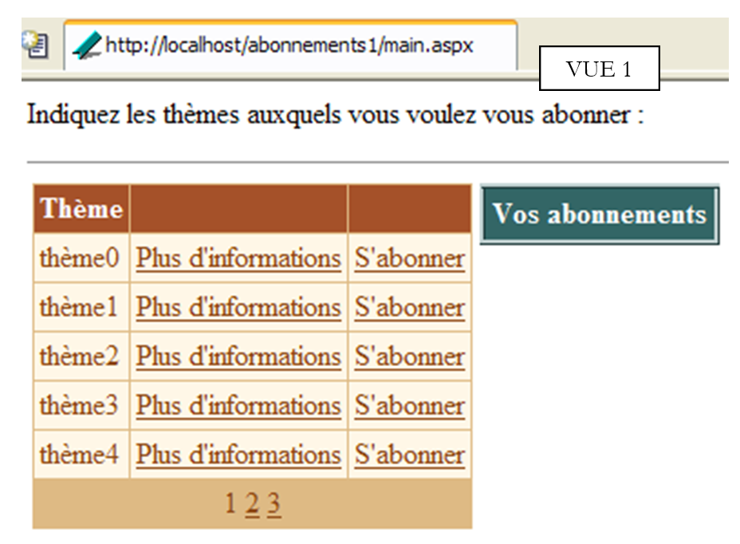
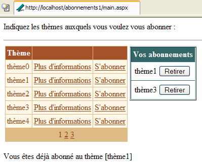
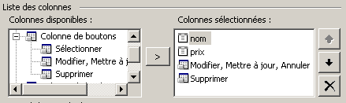
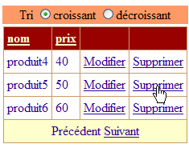
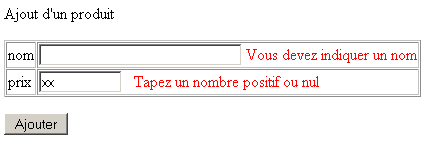
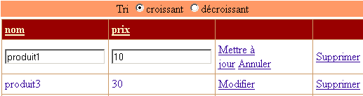
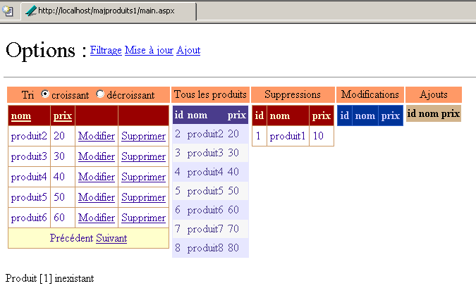

9. Componentes de servidor ASP - 3
9.1. Introducción
Continuamos nuestro trabajo en la interfaz de usuario profundizando en las capacidades de los componentes [DataList] y [DataGrid], especialmente en el ámbito de la actualización de los datos que muestran
9.2. Gestionar los eventos asociados a los datos de los componentes con enlace de datos
9.2.1. El ejemplo
Consideremos la siguiente página:
 |
La página incluye tres componentes asociados a una lista de datos:
- un componente [DataList] denominado [DataList1]
- un componente [DataGrid] denominado [DataGrid1]
- un componente [Repeater] denominado [Repeater1]
La lista de datos asociada es la matriz {"cero", "uno", "dos", "tres"}. A cada uno de estos datos se le asocia un grupo de dos botones denominados [Infos1] y [Infos2]. El usuario hace clic en uno de los botones y aparece un texto con el nombre del botón en el que se ha hecho clic. Aquí queremos mostrar cómo gestionar una lista de botones o enlaces.
9.2.2. Configuración de los componentes
El componente [DataList1] se configura de la siguiente manera:
<asp:datalist id="DataList1" ... runat="server">
<SelectedItemStyle ...</SelectedItemStyle>
<HeaderTemplate>
[début]
</HeaderTemplate>
<FooterTemplate>
[fin]
</FooterTemplate>
<ItemStyle ...></ItemStyle>
<ItemTemplate>
<P><%# Container.DataItem %>
<asp:Button runat="server" Text="Infos1" CommandName="infos1"></asp:Button>
<asp:Button runat="server" Text="Infos2" CommandName="infos2"></asp:Button></P>
</ItemTemplate>
<FooterStyle ...></FooterStyle>
<HeaderStyle ...></HeaderStyle>
</asp:datalist>
Hemos omitido todo lo relacionado con la apariencia del [DataList] para centrarnos únicamente en su contenido:
- la sección <HeaderTemplate> define el encabezado del [DataList] y la sección <FooterTemplate> su pie de página.
- La sección <ItemTemplate> es la plantilla de visualización utilizada para cada uno de los datos de la lista de datos asociada. En ella se encuentran los siguientes elementos:
- el valor del dato actual de la lista de datos asociada al componente: <%# Container.DataItem %>
- dos botones denominados respectivamente [Infos1] y [Infos2]. La clase [Button] tiene un atributo [CommandName] que se utiliza aquí. Nos permitirá determinar qué botón ha originado un evento en el [DataList]. Para gestionar el clic en los botones, solo tendremos un único gestor de eventos que estará vinculado al propio [DataList] y no a los botones. Este gestor recibirá información que le indicará en qué línea del [DataList] se ha producido el clic. El atributo [CommandName] nos permitirá saber en qué botón de la línea se ha producido.
El componente [Repeater1] se configura de manera muy similar:
<asp:repeater id="Repeater1" runat="server">
<HeaderTemplate>
[début]<hr />
</HeaderTemplate>
<FooterTemplate>
<hr />
[fin]
</FooterTemplate>
<SeparatorTemplate>
<hr />
</SeparatorTemplate>
<ItemTemplate>
<%# Container.DataItem %>
<asp:Button runat="server" Text="Infos1" CommandName="infos1"></asp:Button>
<asp:Button runat="server" Text="Infos2" CommandName="infos2"></asp:Button></P>
</ItemTemplate>
</asp:repeater>
Simplemente se ha añadido una sección <SeparatorTemplate> para que los datos sucesivos mostrados por el componente queden separados por una barra horizontal.
Por último, el componente [DataGrid1] se configura de la siguiente manera:
<asp:datagrid id="DataGrid1" ... runat="server" PageSize="2" AllowPaging="True">
<SelectedItemStyle ...></SelectedItemStyle>
<AlternatingItemStyle ...></AlternatingItemStyle>
<ItemStyle ...></ItemStyle>
<HeaderStyle ...></HeaderStyle>
<FooterStyle ....></FooterStyle>
<Columns>
<asp:ButtonColumn Text="Infos1" ButtonType="PushButton" CommandName="Infos1">
</asp:ButtonColumn>
<asp:ButtonColumn Text="Infos2" ButtonType="PushButton" CommandName="Infos2">
</asp:ButtonColumn>
</Columns>
<PagerStyle .... Mode="NumericPages"></PagerStyle>
</asp:datagrid>
Aquí también hemos omitido la información de estilo (colores, anchos, etc.). Estamos en el modo de generación automática de columnas, que es el modo predeterminado de [DataGrid]. Esto significa que habrá tantas columnas como haya en la fuente de datos. Aquí hay una. Hemos añadido otras dos columnas etiquetadas con <asp:ButtonColumn>. En ellas definimos información similar a la definida para los otros dos componentes, así como el tipo de botón, en este caso [PushButton]. El tipo por defecto es [LinkButton], c.a.d. un enlace. Además, los datos se paginarán [AllowPaging=true] con un tamaño de página de dos elementos [PageSize=2].
9.2.3. El código de presentación de la página
El código de presentación de nuestra página de ejemplo se ha colocado en un archivo [main.aspx]:
<%@ page codebehind="main.aspx.vb" inherits="vs.main" autoeventwireup="false" %>
<HTML>
<HEAD>
</HEAD>
<body>
<form runat="server">
<P>Gestion d'événements de composants associés à des listes de données</P>
<HR width="100%" SIZE="1">
<table cellSpacing="1" cellPadding="1" bgColor="#ffcc00" border="1">
<tr>
<td ...>DataList</td>
<td ...>DataGrid</td>
<td ...>Repeater</td>
</tr>
<tr>
<td ...>
<asp:datalist id="DataList1" ... runat="server">
<HeaderTemplate>
[début]
</HeaderTemplate>
<FooterTemplate>
[fin]
</FooterTemplate>
<ItemStyle ...></ItemStyle>
<ItemTemplate>
<P><%# Container.DataItem %>
<asp:Button runat="server" Text="Infos1" CommandName="infos1"></asp:Button>
<asp:Button runat="server" Text="Infos2" CommandName="infos2"></asp:Button></P>
</ItemTemplate>
<FooterStyle ...></FooterStyle>
<HeaderStyle ....></HeaderStyle>
</asp:datalist>
<P></P>
</td>
<td ...>
<asp:datagrid id="DataGrid1" ... runat="server" PageSize="2" AllowPaging="True">
<AlternatingItemStyle ...></AlternatingItemStyle>
<ItemStyle ...></ItemStyle>
<HeaderStyle ...></HeaderStyle>
<FooterStyle ...></FooterStyle>
<Columns>
<asp:ButtonColumn Text="Infos1" ButtonType="PushButton" CommandName="Infos1">
</asp:ButtonColumn>
<asp:ButtonColumn Text="Infos2" ButtonType="PushButton" CommandName="Infos2">
</asp:ButtonColumn>
</Columns>
<PagerStyle ... Mode="NumericPages"></PagerStyle>
</asp:datagrid>
</td>
<td ...>
<asp:repeater id="Repeater1" runat="server">
<HeaderTemplate>
[début]<hr />
</HeaderTemplate>
<FooterTemplate>
<hr />
[fin]
</FooterTemplate>
<SeparatorTemplate>
<hr />
</SeparatorTemplate>
<ItemTemplate>
<%# Container.DataItem %>
<asp:Button runat="server" Text="Infos1" CommandName="infos1"></asp:Button>
<asp:Button runat="server" Text="Infos2" CommandName="infos2"></asp:Button></P>
</ItemTemplate>
</asp:repeater>
</td>
</tr>
</table>
<P><asp:label id="lblInfo" runat="server"></asp:label></P>
<P></P>
</form>
</body>
</HTML>
En el código anterior, hemos omitido el código de formato (colores, líneas, tamaños, etc.).
9.2.4. El código de control de la página
El código de control de la aplicación se ha colocado en el archivo [main.aspx.vb]:
Public Class main
Inherits System.Web.UI.Page
' página de componentes
Protected WithEvents DataList1 As System.Web.UI.WebControls.DataList
Protected WithEvents lblInfo As System.Web.UI.WebControls.Label
Protected WithEvents DataGrid1 As System.Web.UI.WebControls.DataGrid
Protected WithEvents Repeater1 As System.Web.UI.WebControls.Repeater
' la fuente de datos
Protected textes() As String = {"zéro", "un", "deux", "trois"}
Private Sub Page_Load(ByVal sender As System.Object, ByVal e As System.EventArgs) Handles MyBase.Load
If Not IsPostBack Then
'enlaces a fuentes de datos
DataList1.DataSource = textes
DataGrid1.DataSource = textes
Repeater1.DataSource = textes
Page.DataBind()
End If
End Sub
Private Sub DataList1_ItemCommand(ByVal source As Object, ByVal e As System.Web.UI.WebControls.DataListCommandEventArgs) Handles DataList1.ItemCommand
' se ha producido un evento en una de las líneas [datalist]
lblInfo.Text = "Vous avez cliqué sur le bouton [" + e.CommandName + "] de l'élément [" + e.Item.ItemIndex.ToString + "] du composant [DataList]"
End Sub
Private Sub Repeater1_ItemCommand(ByVal source As Object, ByVal e As System.Web.UI.WebControls.RepeaterCommandEventArgs) Handles Repeater1.ItemCommand
' se ha producido un evento en una de las líneas [repeater]
lblInfo.Text = "Vous avez cliqué sur le bouton [" + e.CommandName + "] de l'élément [" + e.Item.ItemIndex.ToString + "] du composant [Repeater]"
End Sub
Private Sub DataGrid1_ItemCommand(ByVal source As Object, ByVal e As System.Web.UI.WebControls.DataGridCommandEventArgs) Handles DataGrid1.ItemCommand
' se ha producido un evento en una de las líneas [datagrid]
lblInfo.Text = "Vous avez cliqué sur le bouton [" + e.CommandName + "] de l'élément [" + e.Item.ItemIndex.ToString + "] de la page [" + DataGrid1.CurrentPageIndex.ToString() + "] du composant [DataGrid]"
End Sub
Private Sub DataGrid1_PageIndexChanged(ByVal source As Object, ByVal e As System.Web.UI.WebControls.DataGridPageChangedEventArgs) Handles DataGrid1.PageIndexChanged
' cambiar página
With DataGrid1
.CurrentPageIndex = e.NewPageIndex
.DataSource = textes
.DataBind()
End With
End Sub
End Class
Comentarios:
- la fuente de datos [textes] es una simple matriz de cadenas de caracteres. Se vinculará a los tres componentes presentes en la página
- esta vinculación se realiza en el procedimiento [Page_Load] durante la primera consulta. Para las consultas siguientes, los tres componentes recuperarán sus valores mediante el mecanismo de [VIEW_STATE].
- Los tres componentes tienen un controlador para el evento [ItemCommand]. Este se produce cuando se hace clic en un botón o un enlace en una de las líneas del componente. El controlador recibe dos datos:
- fuente: la referencia del objeto (botón o enlace) que ha originado el evento
- a: información sobre el evento de tipo [DataListCommandEventArgs], [RepeaterCommandEventArgs], [DataGridCommandEventArgs], según el caso. El argumento a aporta diversa información. Aquí nos interesan dos de ellas:
- a.Item: representa la línea en la que se produjo el evento, de tipo [DataListItem], [DataGridItem] o [RepeaterItem]. Sea cual sea el tipo exacto, el elemento [Item] tiene un atributo [ItemIndex] que indica el número de la línea [Item] del contenedor al que pertenece. Aquí mostramos ese número de línea
- a.CommandName: es el atributo [CommandName] del botón (Button, LinkButton, ImageButton) que originó el evento. Esta información, junto con la anterior, nos permite saber qué botón del contenedor es el origen del evento [ItemCommand]
9.3. Aplicación: gestión de una lista de suscripciones
Ahora que sabemos cómo interceptar los eventos que se producen dentro de un contenedor de datos, presentamos un ejemplo que muestra cómo se pueden gestionar.
9.3.1. Introducción
La aplicación que se presenta simula una aplicación de suscripciones a listas de distribución. Estas se definen mediante un objeto [DataTable] de tres columnas:
nombre | tipo | función |
string | clave primaria | |
string | nombre del tema de la lista | |
string | una descripción de los temas tratados por la lista |
Para no complicar nuestro ejemplo, el objeto [DataTable] anterior se creará mediante código de forma arbitraria. En una aplicación real, probablemente lo proporcionaría un método de una clase de acceso a datos. La construcción de la tabla de listas se realizará en el procedimiento [Application_Start] y la tabla resultante se colocará en la aplicación. La llamaremos tabla [dtThèmes]. El usuario se suscribirá a algunos de los temas de esta tabla. La lista de sus suscripciones se conservará allí de nuevo en un objeto [DataTable] llamado [dtAbonnements] y cuya estructura será la siguiente:
nombre | tipo | función |
string | clave primaria | |
string | nombre del tema de la lista |
La aplicación de página única es la siguiente:
 | |||||
n.º | nombre | tipo | propiedades | función | |
DataGrid | Listas de distribución disponibles para suscribirse | ||||
DataList | Lista de suscripciones del usuario a las listas anteriores | ||||
panel | panel de información sobre el tema seleccionado por el usuario con un enlace [Plus d'informations] | ||||
Etiqueta | forma parte de [panelInfos] | nombre del tema | |||
Etiqueta | forma parte de [panelInfos] | descripción del tema | |||
Etiqueta | mensaje informativo de la aplicación | ||||
Nuestro ejemplo tiene como objetivo ilustrar el uso de los componentes [DataGrid] y [DataList], en particular la gestión de los eventos que se producen en las líneas de estos contenedores de datos. Por ello, la aplicación no cuenta con un botón de validación que almacene en una base de datos, por ejemplo, las elecciones realizadas por el usuario. No obstante, es realista. Nos acercamos a una aplicación de comercio electrónico en la que un usuario añadiría productos (suscripciones) a su cesta.
9.3.2. Funcionamiento
La primera vista que tiene el usuario es la siguiente:
 |
El usuario hace clic en los enlaces [Plus d'informations] para obtener información sobre un tema. Esta se muestra en [panelInfos]:

Hace clic en los enlaces [S'abonner] para suscribirse a un tema. Los temas seleccionados se registran en el componente [dlAbonnements]:

Es posible que el usuario desee suscribirse a una lista a la que ya está suscrito. Un mensaje se lo indica:

Por último, puede darse de baja de cualquiera de los temas con los botones [Retirer] situados arriba. No se solicita confirmación. Esto no es necesario aquí, ya que el usuario puede volver a suscribirse fácilmente. Esta es la vista tras darse de baja de [thème1]:

9.3.3. Configuración de los contenedores de datos
El componente [dgThèmes] de tipo [DataGrid] está vinculado a una fuente de tipo [DataTable]. Su formato se ha definido mediante el enlace [Mise en forme automatique] del panel de propiedades de [DataGrid]. La definición de sus propiedades se ha realizado mediante el enlace [Générateur de proprités] del mismo panel. El código generado es el siguiente (se omite el código de formato):
<asp:datagrid id="dgThèmes" AutoGenerateColumns="False" AllowPaging="True" PageSize="5"
runat="server">
<ItemStyle ...></ItemStyle>
<HeaderStyle ...></HeaderStyle>
<FooterStyle ...></FooterStyle>
<Columns>
<asp:BoundColumn DataField="thème" HeaderText="Thème"></asp:BoundColumn>
<asp:ButtonColumn Text="Plus d'informations" CommandName="infos"></asp:ButtonColumn>
<asp:ButtonColumn Text="S'abonner" CommandName="abonner"></asp:ButtonColumn>
</Columns>
<PagerStyle HorizontalAlign="Center" ... Mode="NumericPages"></PagerStyle>
</asp:datagrid>
Cabe destacar los siguientes puntos:
definimos nosotros mismos las columnas que se mostrarán en la sección <columns>...</columns> | |
para la paginación de los datos | |
define la columna [thème] (HeaderText) del [DataGrid] que se vinculará a la columna [thème] de la fuente de datos (DataField) | |
define dos columnas de botones (o enlaces). Para diferenciar los dos enlaces de una misma línea, se utilizará su propiedad [CommandName]. |
El componente [DataGrid] no está totalmente configurado. Se configurará en el código del controlador.
El componente [dlAbonnements] de tipo [DataList] está vinculado a una fuente de tipo [DataTable]. Su formato se ha definido mediante el enlace [Mise en forme automatique] del panel de propiedades del [DataList]. La definición de sus propiedades se ha realizado directamente en el código de presentación. Este código es el siguiente (se omite el código de formato):
<asp:DataList id="dlAbonnements" ... runat="server" >
<HeaderTemplate>
<div align="center">
Vos abonnements</div>
</HeaderTemplate>
<ItemStyle ...></ItemStyle>
<ItemTemplate>
<TABLE>
<TR>
<TD><%#Container.DataItem("thème")%></TD>
<TD>
<asp:Button id="lnkRetirer" CommandName="retirer" runat="server" Text="Retirer" /></TD>
</TR>
</TABLE>
</ItemTemplate>
<HeaderStyle ...></HeaderStyle>
</asp:DataList>
define el texto del encabezado de [DataList] | |
define el elemento actual de [DataList]: aquí se ha colocado una tabla de dos columnas y una fila. La primera celda contendrá el nombre del tema al que el usuario desea suscribirse, y la otra, el botón [Retirer] que le permite cancelar su elección. |
9.3.4. La página de presentación
El código de presentación [main.aspx] es el siguiente:
<%@ page src="main.aspx.vb" inherits="main" autoeventwireup="false" %>
<HTML>
<HEAD>
<title></title>
</HEAD>
<body>
<P>Indiquez les thèmes auxquels vous voulez vous abonner :</P>
<HR width="100%" SIZE="1">
<form runat="server">
<table>
<tr>
<td vAlign="top">
<asp:datagrid id="dgThèmes" ... runat="server">
...
</asp:datagrid>
</td>
<td vAlign="top">
<asp:DataList id="dlAbonnements" ... runat="server" GridLines="Horizontal" ShowFooter="False">
....
</asp:DataList>
</td>
<td vAlign="top">
<asp:Panel ID="panelInfo" Runat="server" EnableViewState="False">
<TABLE>
<TR>
<TD bgColor="#99cccc">
<asp:Label id="lblThème" runat="server"></asp:Label></TD>
</TR>
<TR>
<TD bgColor="#ffff99">
<asp:Label id="lblDescription" runat="server"></asp:Label></TD>
</TR>
</TABLE>
</asp:Panel>
</td>
</tr>
</table>
<P>
<asp:Label id="lblInfo" runat="server" EnableViewState="False"></asp:Label></P>
</form>
</body>
</HTML>
9.3.5. Los controladores
El control se distribuye entre los archivos [global.asax] y [main.aspx]. El archivo [global.asax] es el siguiente:
El archivo asociado [global.asax.vb] contiene el siguiente código:
Imports System.Web
Imports System.Web.SessionState
Imports System.Data
Imports System
Public Class global
Inherits System.Web.HttpApplication
Sub Application_Start(ByVal sender As Object, ByVal e As EventArgs)
' inicializar la fuente de datos
Dim thèmes As New DataTable
' columnas
With thèmes.Columns
.Add("id", GetType(System.Int32))
.Add("thème", GetType(System.String))
.Add("description", GetType(System.String))
End With
' la columna id será la clave primaria
thèmes.Constraints.Add("cléprimaire", thèmes.Columns("id"), True)
' líneas
Dim ligne As DataRow
For i As Integer = 0 To 10
ligne = thèmes.NewRow
ligne.Item("id") = i.ToString
ligne.Item("thème") = "thème" + i.ToString
ligne.Item("description") = "description du thème " + i.ToString
thèmes.Rows.Add(ligne)
Next
' poner la fuente de datos en la aplicación
Application("thèmes") = thèmes
End Sub
Sub Session_Start(ByVal sender As Object, ByVal e As EventArgs)
' inicio de sesión - crear una tabla de suscripciones vacía
Dim dtAbonnements As New DataTable
With dtAbonnements
' las columnas
.Columns.Add("id", GetType(String))
.Columns.Add("thème", GetType(String))
' la clave primaria
.PrimaryKey = New DataColumn() {.Columns("id")}
End With
' la mesa se coloca en la sesión
Session.Item("abonnements") = dtAbonnements
End Sub
End Class
El procedimiento [Application_Start], que se ejecuta cuando la aplicación recibe su primera solicitud, crea el [DataTable] de los temas a los que se puede suscribir. Se crea de forma arbitraria con código. Recordemos la técnica que ya hemos visto. Se crea en el siguiente orden:
- un objeto [DataTable] vacío, sin estructura y sin datos
- la estructura de la tabla definiendo sus columnas (nombre y tipo de datos que contiene)
- las filas de la tabla que representan los datos útiles
Aquí hemos añadido una clave primaria. Es la columna «id» la que sirve de clave primaria. Hay varias formas de expresarlo. Aquí hemos utilizado una restricción. En SQL, una restricción es una regla que deben cumplir los datos de una fila para que esta pueda añadirse a una tabla. Existen todo tipo de restricciones posibles. La restricción «Primary Key» obliga a la columna a la que se aplica a tener valores únicos y no vacíos. Una clave primaria puede estar constituida, de hecho, por una expresión que implique valores de varias columnas. [DataTable].Constraints es la colección de restricciones de una tabla determinada. Para añadir una restricción, se utiliza el método [DataTable.Constraints.Add]. Este tiene varias firmas. Aquí se ha utilizado el método [Add(Byval nom as String, Byval colonne as DataColumn, Byval cléPrimaire as Boolean)]:
nombre de la restricción: puede ser cualquiera | |
columna que será la clave principal —de tipo [DataColumn] | |
debe ser [vrai] para convertir [colonne] en una clave primaria. Si es [cléPrimaire=false], solo tenemos la restricción de valores únicos en [colonne] |
Para convertir la columna denominada «id» en la clave primaria de la tabla [dtAbonnements], se escribe lo siguiente:
El procedimiento [Session_Start], que se ejecuta cuando la aplicación recibe la primera solicitud de un cliente. Sirve para crear objetos propios de cada cliente que deben persistir a lo largo de sus diferentes solicitudes. El procedimiento construye la tabla [DataTable] de las suscripciones del cliente. Solo se construye su estructura, ya que inicialmente esta tabla está vacía. Se irá llenando a medida que se realicen las solicitudes. También en este caso, la columna «id» sirve como clave primaria. Se ha utilizado una técnica diferente para declarar esta restricción:
es la matriz de columnas que forman la clave primaria; aquí se ha declarado una matriz de un elemento: la columna denominada «id» |
Cuando la solicitud del cliente llega al controlador [main.aspx], los dos objetos [DataTable] están disponibles en la aplicación para la tabla de temas y en la sesión para la tabla de suscripciones. El controlador [main.aspx.vb] es el siguiente:
Imports System.Data
Public Class main
Inherits System.Web.UI.Page
Protected WithEvents dgThèmes As System.Web.UI.WebControls.DataGrid
Protected WithEvents lblThème As System.Web.UI.WebControls.Label
Protected WithEvents lblDescription As System.Web.UI.WebControls.Label
Protected WithEvents dlAbonnements As System.Web.UI.WebControls.DataList
Protected WithEvents lblInfo As System.Web.UI.WebControls.Label
Protected WithEvents panelInfo As System.Web.UI.WebControls.Panel
Protected dtThèmes As DataTable
Protected dtAbonnements As DataTable
Private Sub Page_Load(ByVal sender As System.Object, ByVal e As System.EventArgs) Handles MyBase.Load
...
End Sub
Private Sub liaisons()
...
End Sub
Private Sub dgThèmes_PageIndexChanged(ByVal source As Object, ByVal e As System.Web.UI.WebControls.DataGridPageChangedEventArgs) Handles dgThèmes.PageIndexChanged
...
End Sub
Private Sub dgThèmes_ItemCommand(ByVal source As Object, ByVal e As System.Web.UI.WebControls.DataGridCommandEventArgs) Handles dgThèmes.ItemCommand
...
End Sub
Private Sub infos(ByVal id As String)
...
End Sub
Private Sub abonner(ByVal id As String)
...
End Sub
Private Sub dlAbonnements_ItemCommand(ByVal source As Object, ByVal e As System.Web.UI.WebControls.DataListCommandEventArgs) Handles dlAbonnements.ItemCommand
...
End Sub
End Class
La función principal del procedimiento [Page_Load] es:
- recuperar las dos tablas [dtThèmes] y [dtAbonnements], que se encuentran respectivamente en la aplicación y en la sesión, para que estén disponibles para todos los métodos de la página
- vincular los datos de estas dos fuentes con sus respectivos contenedores. Esto solo se realiza en la primera consulta. En las consultas siguientes, la vinculación no debe realizarse sistemáticamente y, cuando sea necesario, a veces hay que esperar a un evento posterior a [Page_Load] para llevarla a cabo.
El código de [Page_Load] es el siguiente:
Private Sub Page_Load(ByVal sender As System.Object, ByVal e As System.EventArgs) Handles MyBase.Load
' recuperar las fuentes de datos
dtThèmes = CType(Application("thèmes"), DataTable)
dtAbonnements = CType(Session("abonnements"), DataTable)
' enlace de datos
If Not IsPostBack Then
liaisons()
End If
' ocultamos cierta información
panelInfo.Visible = False
End Sub
Private Sub liaisons()
'vincular la fuente de datos al componente [datagrid]
With dgThèmes
.DataSource = dtThèmes
.DataKeyField = "id"
End With
' vincular la fuente de datos al componente [datalist]
With dlAbonnements
.DataSource = dtAbonnements
.DataKeyField = "id"
End With
' asignar datos a los componentes
Page.DataBind()
End Sub
En el procedimiento [liaisons], utilizamos la propiedad [DataKeyField] de los componentes [DataList] y [DataGrid] para definir la columna de la fuente de datos que servirá para identificar de forma única las líneas de los contenedores. Normalmente, esta columna es la clave principal de la fuente de datos, pero no es obligatorio. Basta con que la columna no contenga duplicados ni valores vacíos. Para el contenedor [dgThèmes], es la columna «id» de la fuente [dtThèmes] la que servirá de clave primaria y, para el contenedor [dlAbonnements], será la columna «id» de la fuente [dtAbonnements]. No es necesario que el contenedor muestre la columna que le sirve de clave primaria. En este caso, ninguno de los dos contenedores muestra la columna de clave primaria. La ventaja de que un contenedor tenga una clave primaria es que esta permite localizar fácilmente en la fuente de datos la información relacionada con la fila del contenedor en la que se ha producido un evento. De hecho, es frecuente que, a partir de la línea de un contenedor en la que se ha producido un evento, sea necesario actuar sobre la línea correspondiente de la fuente de datos vinculada a él. La clave primaria facilita esta tarea.
La paginación del [DataGrid] se gestiona de forma clásica:
Private Sub dgThèmes_PageIndexChanged(ByVal source As Object, ByVal e As System.Web.UI.WebControls.DataGridPageChangedEventArgs) Handles dgThèmes.PageIndexChanged
' cambiar página
dgThèmes.CurrentPageIndex = e.NewPageIndex
' enlace
liaisons()
End Sub
Las acciones en los enlaces [Plus d'informations] y [S'abonner] se gestionan mediante el procedimiento [dgThèmes_ItemCommand]:
Private Sub dgThèmes_ItemCommand(ByVal source As Object, ByVal e As System.Web.UI.WebControls.DataGridCommandEventArgs) Handles dgThèmes.ItemCommand
' evt en una línea [datagrid]
Dim commande As String = e.CommandName
Select Case commande
Case "infos"
infos(dgThèmes.DataKeys(e.Item.ItemIndex))
Case "abonner"
abonner(dgThèmes.DataKeys(e.Item.ItemIndex))
End Select
' enlace
liaisons()
End Sub
Se aprovecha el hecho de que ambos enlaces tienen un atributo [CommandName] para diferenciarlos. Según el valor de este atributo, se llama al procedimiento [infos] o [abonner], pasando en ambos casos la clave «id» asociada al elemento de [DataGrid] donde se produjo el evento. Con esta información, el procedimiento [info] mostrará la información del tema elegido por el usuario:
Private Sub infos(ByVal id As String)
' información sobre el tema clave id
' recuperamos la línea de [datatable] correspondiente a la clave
Dim ligne As DataRow
ligne = dtThèmes.Rows.Find(id)
If Not ligne Is Nothing Then
' mostramos la información
lblThème.Text = CType(ligne("thème"), String)
lblDescription.Text = CType(ligne("description"), String)
panelInfo.Visible = True
End If
End Sub
Dado que la tabla [dtThèmes] tiene una clave primaria, el método [dtThèmes.Rows.Find("P")] permite encontrar la fila con la clave primaria P. Si se encuentra, se obtiene un objeto [DataRow]. Aquí debemos buscar la fila que tiene la clave primaria [id], donde [id] se pasa como parámetro. Si se encuentra la línea, se colocan los datos [thème] y [description] de esa línea en el panel de información, que luego se hace visible.
El procedimiento [abonner(id)] debe añadir el tema de clave [id] a la lista de suscripciones. Su código es el siguiente:
Private Sub abonner(ByVal id As String)
' suscripción temática clave id
' recuperamos la línea de [datatable] correspondiente a la clave
Dim ligne As DataRow
ligne = dtThèmes.Rows.Find(id)
If Not ligne Is Nothing Then
' compruebe que aún no es abonado
Dim abonnement As DataRow
abonnement = dtAbonnements.Rows.Find(id)
If Not abonnement Is Nothing Then
' informar del error
lblInfo.Text = "Vous êtes déjà abonné au thème [" + ligne("thème") + "]"
Else
' añadir el tema a las suscripciones
abonnement = dtAbonnements.NewRow
abonnement("id") = id
abonnement("thème") = ligne("thème")
dtAbonnements.Rows.Add(abonnement)
' hacemos las conexiones
liaisons()
End If
End If
End Sub
En la lista de temas [dtThèmes], se busca en primer lugar la línea de clave [id]. Si se encuentra, se comprueba que ese tema no esté ya presente en la lista de suscripciones para evitar registrarlo dos veces. Si es así, se muestra un mensaje de error. De lo contrario, se añade una nueva suscripción a la tabla [dtAbonnements] y se establecen los enlaces de los componentes de la lista de datos con sus respectivas fuentes.
Cuando el usuario hace clic en un botón [Retirer], hay que eliminar un elemento de la tabla [dtAbonnements]. Esto se hace mediante el siguiente procedimiento:
Private Sub dlAbonnements_ItemCommand(ByVal source As Object, ByVal e As System.Web.UI.WebControls.DataListCommandEventArgs) Handles dlAbonnements.ItemCommand
' retirar una suscripción
Dim commande As String = e.CommandName
If commande = "retirer" Then
' se retira la suscripción [datatable]
With dtAbonnements.Rows
.Remove(.Find(dlAbonnements.DataKeys(e.Item.ItemIndex)))
End With
' enlaces
liaisons()
End If
End Sub
En primer lugar, se comprueba el atributo [CommandName] del elemento que origina el evento. En realidad, esto es bastante innecesario, ya que el botón [Retirer] es el único control capaz de generar un evento en el componente [DataList]. Por lo tanto, no hay ambigüedad. Para eliminar una línea de un objeto [DataTable], se utiliza el método [DataList.Remove(DataRow)], que elimina de la tabla la línea de tipo [DataRow] pasada como parámetro. Esta línea se encuentra mediante el método [DataList.Find], al que se le ha pasado la clave primaria de la línea buscada. Una vez eliminada la línea, se realiza la vinculación de los datos a los componentes
9.4. Gestionar un [DataList] paginado
Retomamos el ejemplo anterior para paginar el componente [DataList] que representa la lista de suscripciones del usuario. A diferencia del componente [DataGrid], el componente [DataList] no ofrece ninguna facilidad para la paginación. Veremos que su implementación es compleja, lo que nos hará apreciar en su justo valor la paginación automática del [DataGrid].
9.4.1. Funcionamiento
La única diferencia es la paginación del [DataList]. Las páginas tendrán dos suscripciones. Si el usuario tiene cinco suscripciones, habrá tres páginas. La primera será la siguiente:

La segunda página se obtiene a través del enlace [Suivant]:

La tercera página:

Cabe señalar que los enlaces [Précédent] y [Suivant] solo son visibles si hay, respectivamente, una página anterior y una página posterior a la página actual.
9.4.2. Código de presentación
Los enlaces [Précédent] y [Suivant] se obtienen añadiendo una etiqueta <FooterTemplate> a [DataList]:
<asp:datalist id="dlAbonnements" runat="server" ...>
....
<FooterTemplate>
<asp:LinkButton id="lnkPrecedent" runat="server" CommandName="precedent">Précédent</asp:LinkButton>
<asp:LinkButton id="lnkSuivant" runat="server" CommandName="suivant">Suivant</asp:LinkButton>
</FooterTemplate>
....
</asp:datalist>
9.4.3. Código de control
El archivo asociado [global.asax.vb] evoluciona de la siguiente manera:
...
Public Class global
Inherits System.Web.HttpApplication
Sub Application_Start(ByVal sender As Object, ByVal e As EventArgs)
...
End Sub
Sub Session_Start(ByVal sender As Object, ByVal e As EventArgs)
' inicio de sesión - crear una tabla de suscripciones vacía
Dim dtAbonnements As New DataTable
With dtAbonnements
' las columnas
.Columns.Add("id", GetType(String))
.Columns.Add("thème", GetType(String))
' la clave primaria
.PrimaryKey = New DataColumn() {.Columns("id")}
End With
' la mesa se coloca en la sesión
Session.Item("abonnements") = dtAbonnements
' la página actual es la página 0
Session.Item("pAC") = 0
' el número de suscripciones en esta página es 0
Session.Item("nbAC") = 0
End Sub
Además de la tabla de suscripciones [dtAbonnements], se introducen en la sesión otros dos datos:
de tipo [Integer]: es el número de la página actual mostrada en la última consulta | |
de tipo [Integer]: número de líneas mostradas en la página anterior |
Al inicio de una sesión, el número de la página actual y el número de líneas de dicha página son nulos.
El controlador [main.aspx.vb] evoluciona de la siguiente manera:
....
Public Class main
Inherits System.Web.UI.Page
....
' datos de aplicación
Protected dtThèmes As DataTable
Protected dtAbonnements As DataTable
Protected dtPA As DataTable ' la page d'abonnements affichée
Protected Const nbAP As Integer = 2 ' nbre abonnements par page
Protected pAC As Integer ' page abonnement courant
Protected nbAC As Integer ' nombre d'abonnements dans page courante
Private Sub Page_Load(ByVal sender As System.Object, ByVal e As System.EventArgs) Handles MyBase.Load
...
End Sub
Private Sub terminer()
...
End Sub
Private Sub dgThèmes_PageIndexChanged(ByVal source As Object, ByVal e As System.Web.UI.WebControls.DataGridPageChangedEventArgs) Handles dgThèmes.PageIndexChanged
...
End Sub
Private Sub dgThèmes_ItemCommand(ByVal source As Object, ByVal e As System.Web.UI.WebControls.DataGridCommandEventArgs) Handles dgThèmes.ItemCommand
...
End Sub
Private Sub infos(ByVal id As String)
...
End Sub
Private Sub abonner(ByVal id As String)
...
End Sub
Private Sub dlAbonnements_ItemCommand(ByVal source As Object, ByVal e As System.Web.UI.WebControls.DataListCommandEventArgs) Handles dlAbonnements.ItemCommand
...
End Sub
Private Sub changePAC()
...
End Sub
Private Sub setLiens(ByVal ctl As Control, ByVal blPrec As Boolean, ByVal blSuivant As Boolean)
...
End Sub
End Class
Aquí se definen nuevos datos relacionados con la paginación de las suscripciones:
Protected dtPA As DataTable ' la page d'abonnements affichée
Protected Const nbAP As Integer = 2 ' nbre abonnements par page
Protected pAC As Integer ' page abonnement courant
Protected nbAC As Integer ' nombre d'abonnements dans page courante
Parte de esta información se almacena en la sesión y se recupera en cada solicitud en el procedimiento [Page_Load]:
Private Sub Page_Load(ByVal sender As System.Object, ByVal e As System.EventArgs) Handles MyBase.Load
' recuperar las fuentes de datos
dtThèmes = CType(Application("thèmes"), DataTable)
dtAbonnements = CType(Session("abonnements"), DataTable)
' y la información de la pantalla de suscripción
pAC = CType(Session("pAC"), Integer)
nbAC = CType(Session("nbAC"), Integer)
' enlace de datos
If Not IsPostBack Then
' mostrar una lista vacía de suscripciones
terminer()
End If
' ocultamos cierta información
panelInfo.Visible = False
End Sub
La información recuperada [pAC] y [nbAC] corresponde a la página de suscripciones mostrada en la solicitud anterior:
es el número de la página actual mostrada en la solicitud anterior | |
número de líneas mostradas en esta página actual |
El método [terminer] establece los enlaces entre los componentes y sus fuentes de datos, tal y como lo hacía el método [liaisons] en la aplicación anterior. La novedad aquí es la vinculación de [DataList] con la tabla [dtPA], que es la página de suscripciones que se va a mostrar:
Private Sub terminer()
' vincular la fuente de datos al componente [datagrid]
With dgThèmes
.DataSource = dtThèmes
.DataKeyField = "id"
End With
' vinculamos la página de suscripciones al componente [datalist], teniendo en cuenta la página pAC actual
changePAC()
' se muestra la página p
With dlAbonnements
.DataSource = dtPA
.DataKeyField = "id"
End With
' asignar datos a los componentes
Page.DataBind()
' gestión de enlaces [précédent] y [suivant] en [datalist]
Dim blprec As Boolean = pAC <> 0
Dim blsuivant As Boolean = pAC <> (dtAbonnements.Rows.Count - 1) \ nbAP
Dim nbLiensTrouvés As Integer = 0
setLiens(dlAbonnements, blprec, blsuivant, nbLiensTrouvés)
' guardar la información de la página actual en la sesión
Session("pAC") = pAC
Session("nbAC") = dtPA.Rows.Count
End Sub
Cabe destacar lo siguiente:
- la fuente [dtPA] depende del número de página actual [pAC] que se va a mostrar. La variable [pAC] es una variable global de la clase, manipulada por los métodos que deben modificar este número de página actual. El método [changePAC] se encarga de construir la tabla [dtPA], que se vinculará al componente [dlAbonnements].
- El método [setLiens] tiene la función de mostrar u ocultar los enlaces [Précédent] y [Suivant], dependiendo de si la página actual [pAC] mostrada va precedida y seguida de otra página. Tiene cuatro parámetros:
- [dlAbonnements]: el control [DataList], cuya estructura de controles vamos a explorar para encontrar los dos enlaces. De hecho, aunque estos dos enlaces se encuentran en un lugar concreto, que es el pie de página del [DataList], no parece que haya una forma sencilla de referenciarlos directamente. En cualquier caso, aquí no se ha encontrado.
- [blPrecedent]: valor booleano que se debe asignar a la propiedad [visible] del enlace [Precedent]; es verdadero si la página actual es distinta de 0
- [blSuivant]: valor booleano que se asigna a la propiedad [visible] del enlace [Suivant]; es verdadero si la página actual no es la última de la lista de suscripciones
- [nbLiensTrouvés]: un parámetro de salida que cuenta el número de enlaces encontrados. En cuanto este número sea igual a dos, el método finaliza.
- La información de [pAC] y [nbAC] se guarda en la sesión para la próxima consulta.
El método [changePAC] crea la tabla [dtPA], que se vinculará al componente [dlAbonnements]. Lo hace en función del n.º [pAC] de la página actual que se va a mostrar. La tabla [dtPA] debe mostrar determinadas líneas de la tabla de suscripciones [dtAbonnements]. Recordemos que esta tabla se almacena en la sesión y se actualiza (aumentando o disminuyendo) a medida que se realizan las consultas. Comenzamos fijando el intervalo [premier,dernier] de los números de línea de la tabla [dtAbonnements] que la tabla [dtPA] debe mostrar:
Private Sub changePAC()
' hace que la página pAC sea la página actual para las suscripciones
' gestión de [datalist] páginas
Dim nbAbonnements = dtAbonnements.Rows.Count
Dim dernièrePage = (nbAbonnements - 1) \ nbAP
' primera y última suscripción
If pAC < 0 Then pAC = 0
If pAC > dernièrePage Then pAC = dernièrePage
Dim premier As Integer = pAC * nbAP
Dim dernier As Integer = (pAC + 1) * nbAP - 1
If dernier > nbAbonnements - 1 Then dernier = nbAbonnements - 1
Una vez hecho esto, podemos crear la tabla [dtPA]. En primer lugar, se define su estructura [id,thème] y, a continuación, se rellena copiando en ella las filas de [dtAbonnements] cuyo número se encuentra en el intervalo [premier,dernier] calculado anteriormente.
' creación de la dtpa datatable
dtPA = New DataTable
With dtPA
' las columnas
.Columns.Add("id", GetType(String))
.Columns.Add("thème", GetType(String))
' la clave primaria
.PrimaryKey = New DataColumn() {.Columns("id")}
End With
Dim abonnement As DataRow
For i As Integer = premier To dernier
abonnement = dtPA.NewRow
With abonnement
.Item("id") = dtAbonnements.Rows(i).Item("id")
.Item("thème") = dtAbonnements.Rows(i).Item("thème")
End With
dtPA.Rows.Add(abonnement)
Next
End Sub
Al final del método [changePAC], se ha creado la tabla [dtPA] y se puede vincular al componente [DataList]. Esto se realiza en el método [terminer]. En este mismo método, se utiliza el procedimiento [setLiens] para establecer el estado de los enlaces [Précédent] y [Suivant] del [DataList]. El código de este procedimiento es el siguiente:
Private Sub setLiens(ByVal ctl As Control, ByVal blPrec As Boolean, ByVal blSuivant As Boolean, ByRef nbLiensTrouvés As Integer)
' búsqueda de enlaces [précédent] y __TECHTERM_1
' en el árbol de control [datalist]
' ¿Se han encontrado todos los enlaces?
If nbLiensTrouvés = 2 Then Exit Sub
' revisión de los controles de menores
Dim c As Control
For Each c In ctl.Controls
' empezamos trabajando en profundidad - los enlaces están en la parte inferior del árbol
setLiens(c, blPrec, blSuivant, nbLiensTrouvés)
' link [Précédent] ?
If c.ID = "lnkPrecedent" Then
CType(c, LinkButton).Visible = blPrec
nbLiensTrouvés += 1
End If
' link [Suivant] ?
If c.ID = "lnkSuivant" Then
CType(c, LinkButton).Visible = blSuivant
nbLiensTrouvés += 1
End If
Next
End Sub
El procedimiento es recursivo. En primer lugar, busca, entre los controles hijos del componente [dlAbonnements] los componentes denominados [lnkPrecedent] y [lnkSuivant], que son las identidades (atributo ID) de los dos enlaces de paginación. Los busca primero partiendo de la base del árbol de controles, ya que es ahí donde se encuentran. En cuanto se encuentra un enlace, se incrementa el contador [nbLiensTrouvés] y se rellena la propiedad [visible] del enlace con un valor pasado como parámetro del procedimiento. En cuanto se han encontrado los dos enlaces, ya no se explora más el árbol de controles y el procedimiento recursivo finaliza.
Hemos dicho que el método [changePAC], que establece la fuente de datos [dtPA] para el componente [dlAbonnements], trabajaba con el número [pAC] de la página actual que se iba a mostrar. Varios procedimientos modifican este número:
Private Sub abonner(ByVal id As String)
' suscripción temática clave id
..
' añadir el tema a las suscripciones
..
' actualizar el número de página actual - ahora es la última página
pAC = (dtAbonnements.Rows.Count - 1) \ nbAP
' enlaces de datos
terminer()
End If
End Sub
Tras añadir una suscripción, esta se encuentra al final de la lista de suscripciones. Por lo tanto, nos situamos en la última página de las suscripciones para que el usuario vea la adición que se ha realizado.
Private Sub dlAbonnements_ItemCommand(ByVal source As Object, ByVal e As System.Web.UI.WebControls.DataListCommandEventArgs) Handles dlAbonnements.ItemCommand
' retirar una suscripción
Dim commande As String = e.CommandName
Select Case commande
Case "retirer"
' se retira la suscripción [datatable]
With dtAbonnements.Rows
.Remove(.Find(dlAbonnements.DataKeys(e.Item.ItemIndex)))
End With
' ¿tengo que cambiar la página actual?
nbAC -= 1
If nbAC = 0 Then pAC -= 1
Case "precedent"
' cambiar la página actual
pAC -= 1
Case "suivant"
' cambiar la página actual
pAC += 1
End Select
' enlaces de datos
terminer()
End Sub
- [nbAC] es el número de líneas mostradas en la página actual antes de cancelar una suscripción. Si el nuevo número de líneas de la página es igual a 0, el n.º de página actual [pAC] se reduce en una unidad.
- Al hacer clic en el enlace [Precedent], el número de página actual [pAC] se reduce en una unidad.
- Al hacer clic en el enlace [Suivant], el número de página actual [pAC] se incrementa en una unidad.
El resto de procedimientos siguen siendo los mismos que antes.
9.4.4. Conclusión
En este ejemplo hemos mostrado que podemos paginar un componente [DataList]. Esta paginación es delicada y es preferible recurrir a la paginación automática del componente [DataGrid] siempre que sea posible. Este ejemplo también nos ha mostrado cómo acceder a los componentes presentes en el pie de página del componente [DataList].
9.5. Clase de acceso a una base de productos
Volvemos a centrarnos en la base de datos ACCESS [produits] ya utilizada. Recordemos que tiene una única tabla llamada [liste] cuya estructura es la siguiente:
 |  |
Vamos a crear una clase de acceso a la tabla [liste] que permitirá leerla y actualizarla. También crearemos un cliente de consola que utilizará la clase anterior para actualizar la tabla. En una segunda fase, crearemos un cliente web para realizar esta misma tarea.
9.5.1. La clase ExceptionProduits
La clase [Exception] tiene un constructor que admite un mensaje de error como parámetro. En este caso, queremos disponer de una clase de excepción con un constructor que admita una lista de mensajes de error en lugar de un único mensaje de error. Será la clase [ExceptionProduits] que se muestra a continuación:
Public Class ExceptionProduits
Inherits Exception
' mensaje de error de excepción
Private _erreurs As ArrayList
' fabricante
Public Sub New(ByVal erreurs As ArrayList)
Me._erreurs = erreurs
End Sub
' propiedad
Public ReadOnly Property erreurs() As ArrayList
Get
Return _erreurs
End Get
End Property
End Class
9.5.2. La estructura [sProduit]
La estructura [produit] representará un producto [id, nom, prix]:
' estructura sProduit
Public Structure sProduit
' los campos
Private _id As Integer
Private _nom As String
Private _prix As Double
' propiedad id
Public Property id() As Integer
Get
Return _id
End Get
Set(ByVal Value As Integer)
_id = Value
End Set
End Property
' nombre de la propiedad
Public Property nom() As String
Get
Return _nom
End Get
Set(ByVal Value As String)
If IsNothing(Value) OrElse Value.Trim = String.Empty Then Throw New Exception
_nom = Value
End Set
End Property
' precio de la vivienda
Public Property prix() As Double
Get
Return _prix
End Get
Set(ByVal Value As Double)
If IsNothing(Value) OrElse Value < 0 Then Throw New Exception
_prix = Value
End Set
End Property
End Structure
La estructura solo admite datos válidos para los campos [nom] y [prix].
9.5.3. La clase Productos
La clase [Produits] es la clase que nos permitirá actualizar la tabla [liste] de la base de datos de productos. Su estructura es la siguiente:
Public Class produits
' datos de instancia
Public Sub New(ByVal chaineConnexionOLEDB As String)
....
End Sub
Public Function getProduits() As DataTable
....
End Function
Public Sub ajouterProduit(ByVal produit As sProduit)
...
End Sub
Public Sub modifierProduit(ByVal produit As sProduit)
...
End Sub
Public Sub supprimerProduit(ByVal id As Integer)
...
End Sub
End Class
Los datos de instancia
Los datos compartidos por los distintos métodos de la clase son los siguientes:
Private connexion As OleDbConnection
Private Const selectText As String = "select id,nom,prix from liste"
Private Const insertText As String = "insert into liste(nom,prix) values(?,?)"
Private Const updateText As String = "update liste set nom=?,prix=? where id=?"
Private Const deleteText As String = "delete from liste where id=?"
Private selectCommand As New OleDbCommand
Dim insertCommand As New OleDbCommand
Dim updateCommand As New OleDbCommand
Dim deleteCommand As New OleDbCommand
Dim adaptateur As New OleDbDataAdapter
la conexión a la base de datos se abrirá para ejecutar el comando SQL y se cerrará inmediatamente después | |
consulta SQL [select] que obtiene toda la tabla [liste] | |
consulta que permite insertar una fila (nombre, precio) en la tabla [liste]. Cabe señalar que no se especifica el campo [id]. De hecho, este campo es autoincrementado por SGBD, por lo que no es necesario especificarlo. | |
consulta que permite actualizar los campos (nombre, precio) de la línea de la tabla [liste] que tiene la clave [id] | |
consulta que permite eliminar la línea de la tabla [liste] con la clave [id] | |
objeto [OleDbCommand] que ejecuta la consulta [selectText] en la conexión [connexion] | |
objeto [OleDbCommand] que ejecuta la consulta [updateText] en la conexión [connexion] | |
objeto [OleDbCommand] que ejecuta la consulta [insertText] en la conexión [connexion] | |
objeto [OleDbCommand] que ejecuta la consulta [deleteText] en la conexión [connexion] | |
objeto que permite recuperar el resultado de la ejecución de [selectCommand] en un objeto [DataSet] |
El constructor
El constructor recibe un único parámetro [chaineConnexionOLEDB], que es la cadena de conexión que designa la base de datos que se va a utilizar. A partir de ella, se preparan los cuatro comandos de consulta y actualización de la tabla, así como el adaptador. Se trata únicamente de una preparación y no se establece ninguna conexión.
Public Sub New(ByVal chaineConnexionOLEDB As String)
' preparación de la conexión
connexion = New OleDbConnection(chaineConnexionOLEDB)
' preparamos órdenes de consulta
Dim commandes() As OleDbCommand = {selectCommand, insertCommand, updateCommand, deleteCommand}
Dim textes() As String = {selectText, insertText, updateText, deleteText}
For i As Integer = 0 To commandes.Length - 1
With commandes(i)
.CommandText = textes(i)
.Connection = connexion
End With
Next
' preparar el adaptador de acceso a datos
adaptateur.SelectCommand = selectCommand
End Sub
El método getProduits
Este método permite obtener el contenido de la tabla [Liste] en un objeto [DataTable]. Su código es el siguiente:
Public Function getProduits() As DataTable
' ponemos la tabla [liste] en una [dataset]
Dim contenu As New DataSet
' crear un objeto DataAdapter para leer datos de la fuente OLEDB
Try
With adaptateur
.FillSchema(contenu, SchemaType.Source)
.Fill(contenu)
End With
Catch e As Exception
' pb
Dim erreursCommande As New ArrayList
erreursCommande.Add(String.Format("Erreur d'accès à la base de données : {0}", e.Message))
Throw New ExceptionProduits(erreursCommande)
End Try
' devolvemos el resultado
Return contenu.Tables(0)
End Function
El trabajo se realiza mediante las dos instrucciones siguientes:
With adaptateur
.FillSchema(contenu, SchemaType.Source)
.Fill(contenu)
End With
El método [FillSchema] establece la estructura (columnas, restricciones, relaciones) del contenido de [DataSet] a partir de la estructura de la base de datos a la que hace referencia [adaptateur.Connexion]. Esto nos permite recuperar la estructura de la tabla [liste] y, en particular, su clave primaria. La operación [Fill] que sigue rellena el contenido de [Dataset] con las filas de la tabla [liste]. Con esta única operación, habríamos obtenido los datos y la estructura, pero no la clave primaria. Sin embargo, esta nos será útil para actualizar la tabla [liste] en memoria. Aquí, al igual que en los demás métodos, gestionamos los posibles errores mediante la clase [ExceptionProduits] para obtener una lista (ArrayList) de errores en lugar de un único error. El método [getProduits] devuelve la tabla [liste] en forma de un objeto [DataTable].
El método ajouterProduits
Este método permite añadir una línea (id, nombre, precio) a la tabla [liste]. Esta información se le proporciona en forma de una estructura [sProduit] de campos [id, nom, prix]. El código del método es el siguiente:
Public Sub ajouterProduit(ByVal produit As sProduit)
' añadir un producto [nom,prix]
' preparar los parámetros para la adición
With insertCommand.Parameters
.Clear()
.Add(New OleDbParameter("nom", produit.nom))
.Add(New OleDbParameter("prix", produit.prix))
End With
' añadimos
Try
' conexión de apertura
connexion.Open()
' ejecución de órdenes
insertCommand.ExecuteNonQuery()
Catch ex As Exception
' pb
Dim erreursCommande As New ArrayList
erreursCommande.Add(String.Format("Erreur lors de l'ajout : {0}", ex.Message))
Throw New ExceptionProduits(erreursCommande)
Finally
' bloqueo de conexión
connexion.Close()
End Try
End Sub
Los campos de la estructura [produit] se insertan en los parámetros del comando [insertCommand]. Recordemos la configuración actual de este comando (véase el fabricante):
Private Const insertText As String = "insert into liste(nom,prix) values(?,?)"
insertCommand.Connexion=connexion
El texto del comando SQL [insert] contiene parámetros formales ? que deben sustituirse por parámetros efectivos. Esto se hace con la colección [Parameters] de la clase [OleDbCommand]. Esta contiene elementos de tipo [OleDbParameter] que definen los parámetros efectivos que deben sustituir a los parámetros formales ?. Dado que estos últimos no tienen nombre, se utiliza el índice de los parámetros efectivos para saber a qué parámetro formal corresponde cada parámetro efectivo. En este caso, el parámetro efectivo n.º i de la colección [Parameters] sustituirá al parámetro formal ? n.º i. Para crear un parámetro efectivo de tipo [OleDbParameter], se utiliza aquí el constructor [OleDbParameter (Byval nom as String, Byval valeur as Object)], que define el nombre y el valor del parámetro efectivo. El nombre puede ser cualquiera. Además, en este caso no se utilizará. Los dos parámetros de la instrucción SQL [insert] reciben como valores los de los campos [nom, prix] de la estructura [produit]. Una vez hecho esto, la inserción se realiza mediante la instrucción [insertCommand.ExecuteNonQuery].
El método modifierProduits
Este método permite modificar la línea de la tabla [liste]. La información necesaria se le proporciona en la estructura [sProduit] de los campos [id, nom, prix].
Public Sub modifierProduit(ByVal produit As sProduit)
' modificar un producto [id,nom,prix]
' preparar los parámetros para la actualización
With updateCommand.Parameters
.Clear()
.Add(New OleDbParameter("nom", produit.nom))
.Add(New OleDbParameter("prix", produit.prix))
.Add(New OleDbParameter("id", produit.id))
End With
' hacer el cambio
Try
' conexión de apertura
connexion.Open()
' ejecución de órdenes
Dim nbLignes As Integer = updateCommand.ExecuteNonQuery()
If nbLignes = 0 Then Throw New Exception(String.Format("Le produit de clé [{0}] n'existe pas dans la table des données", produit.id))
Catch ex As Exception
' pb
Dim erreursCommande As New ArrayList
erreursCommande.Add(String.Format("Erreur lors de la modification : {0}", ex.Message))
Throw New ExceptionProduits(erreursCommande)
Finally
' bloqueo de conexión
connexion.Close()
End Try
End Sub
El código es prácticamente idéntico al del método [ajouterProduits], salvo que el comando [OleDbCommand] en cuestión es [updateCommand] en lugar de [insertCommand].
El método supprimerProduits
Este método permite eliminar la línea de la tabla [liste] con la clave [id] pasada como parámetro. El código es el siguiente:
Public Sub supprimerProduit(ByVal id As Integer)
' suprime el producto clave [id]
' preparar los parámetros de supresión
With deleteCommand.Parameters
.Clear()
.Add(New OleDbParameter("id", id))
End With
' borramos
Try
' conexión de apertura
connexion.Open()
' ejecución de órdenes
Dim nbLignes As Integer = deleteCommand.ExecuteNonQuery()
If nbLignes = 0 Then Throw New Exception(String.Format("Le produit de clé [{0}] n'existe pas dans la table des données", id))
Catch ex As Exception
' pb
Dim erreursCommande As New ArrayList
erreursCommande.Add(String.Format("Erreur lors de la suppression : {0}", ex.Message))
Throw New ExceptionProduits(erreursCommande)
Finally
' bloqueo de conexión
connexion.Close()
End Try
End Sub
Se sigue el mismo procedimiento que en los métodos anteriores.
9.5.4. Pruebas de la clase [produits]
Un programa de pruebas [testproduits.vb] de tipo consola podría ser el siguiente:
Option Explicit On
Option Strict On
' espacios de nombres
Imports System
Imports System.Data
Imports Microsoft.VisualBasic
Imports System.Collections
Namespace st.istia.univangers.fr
' prueba pg
Module testproduits
Dim contenu As DataTable
Sub Main(ByVal arguments() As String)
' muestra el contenido de una tabla de productos
' la tabla está en una base de datos ACCESS cuyo pg recibe el nombre de archivo
Const syntaxe1 As String = "pg bdACCESS"
' comprobación de los parámetros del programa
If arguments.Length <> 1 Then
' mensaje de error
Console.Error.WriteLine(syntaxe1)
' fin
Environment.Exit(1)
End If
' preparar la cadena de conexión
Dim chaineConnexion As String = "Provider=Microsoft.Jet.OLEDB.4.0; Ole DB Services=-4; Data Source=" + arguments(0)
' creación de un objeto producto
Dim objProduits As produits = New produits(chaineConnexion)
' se muestran todos los productos
afficheProduits(objProduits)
' insertar un producto
Dim produit As New sProduit
With produit
.nom = "xxx"
.prix = 1
End With
Try
objProduits.ajouterProduit(produit)
Catch ex As ExceptionProduits
afficheErreurs(ex.erreurs)
End Try
' se muestran todos los productos
afficheProduits(objProduits)
' recuperamos el id del producto añadido
produit.id = CType(contenu.Rows(contenu.Rows.Count - 1)("id"), Integer)
' se modifica el producto añadido
produit.prix = 200
Try
objProduits.modifierProduit(produit)
Catch ex As ExceptionProduits
afficheErreurs(ex.erreurs)
End Try
' se muestran todos los productos
afficheProduits(objProduits)
' eliminar el producto añadido
Try
objProduits.supprimerProduit(produit.id)
Catch ex As ExceptionProduits
afficheErreurs(ex.erreurs)
End Try
' se muestran todos los productos
afficheProduits(objProduits)
End Sub
Sub afficheProduits(ByRef objProduits As produits)
' recuperamos la tabla de productos de una tabla de datos
Try
contenu = objProduits.getProduits()
Catch ex As ExceptionProduits
afficheErreurs(ex.erreurs)
Environment.Exit(2)
End Try
Dim lignes As DataRowCollection = contenu.Rows
For i As Integer = 0 To lignes.Count - 1
' línea i de la tabla
Console.Out.WriteLine(lignes(i).Item("id").ToString + "," + lignes(i).Item("nom").ToString + _
"," + lignes(i).Item("prix").ToString)
Next
' detiene el flujo de la consola
Console.WriteLine("...")
Console.ReadLine()
End Sub
Sub afficheErreurs(ByRef erreurs As ArrayList)
' muestra los errores en la consola
If erreurs.Count <> 0 Then
Console.WriteLine("Les erreurs suivantes se sont produites :")
For i As Integer = 0 To erreurs.Count - 1
Console.WriteLine(String.Format("-- {0}", CType(erreurs(i), String)))
Next
End If
' detiene el flujo de la consola
Console.WriteLine("...")
Console.ReadLine()
End Sub
End Module
End Namespace
Compilamos los dos archivos fuente:
dos>vbc /t:library /r:system.dll /r:system.data.dll /r:system.xml.dll produits.vb
dos >vbc /r:produits.dll /r:system.dll /r:system.data.dll /r:system.xml.dll testproduits.vb
dos>dir
07/04/2004 08:40 7 168 produits.dll
04/04/2004 16:38 118 784 produits.mdb
07/04/2004 08:31 6 209 produits.vb
07/04/2004 08:40 5 120 testproduits.exe
03/04/2004 19:02 3 312 testproduits.vb
luego se prueba:
dos>testproduits produits.mdb
1,produit1,10
2,produit2,20
3,produit3,30
...
1,produit1,10
2,produit2,20
3,produit3,30
8,xxx,1
...
1,produit1,10
2,produit2,20
3,produit3,30
8,xxx,200
...
1,produit1,10
2,produit2,20
3,produit3,30
...
Se invita al lector a comparar la salida de pantalla anterior con el código del programa de prueba.
9.6. Aplicación web para actualizar la tabla de productos en caché
9.6.1. Introducción
Ahora vamos a escribir una aplicación web para actualizar la tabla de productos (añadir, eliminar, modificar). La tabla actualizada se mantendrá en memoria en un objeto [DataTable] y será compartida por todos los usuarios. Queremos destacar dos puntos:
- la gestión de un objeto [DataTable]
- los problemas de actualización simultánea de una tabla por parte de varios usuarios.
La arquitectura MVC de la aplicación será la siguiente:
 |
9.6.2. Funcionamiento y vistas
La vista de inicio de la aplicación es la siguiente:

Esta vista, denominada [formulaire], permite al usuario aplicar un filtro a los productos y establecer el número de productos por página que desea ver.
n.º | nombre | tipo | función |
LinkButton | muestra la vista [Formulaire], que sirve para establecer la condición de filtrado | ||
LinkButton | muestra la vista [Produits], que sirve para visualizar y actualizar la tabla de productos (modificación y eliminación) | ||
LinkButton | muestra la vista [Ajout], que sirve para añadir un producto | ||
vueFormulaire | la vista [Formulaire] | ||
TextBox | la condición de filtrado | ||
TextBox | número de productos por página | ||
RequiredFieldValidator | Comprueba si hay un valor en [txtPages] | ||
RangeValidator | comprueba que txtPages está dentro del intervalo [3,10] | ||
botón [submit] que muestra la vista [produits] filtrada por la condición (5) | |||
Etiqueta | Texto informativo en caso de errores |
Por ejemplo, si la vista [formulaire] se rellena de la siguiente manera:

se obtiene el siguiente resultado:
 |
n.º | nombre | tipo | función |
panel | |||
RadioButton | permite al usuario establecer el orden de clasificación deseado al hacer clic en el título de una de las columnas [nom], [prix]. Ambos botones forman parte del grupo [rdTri]. | ||
DataGrid | cuadrícula de visualización de una vista filtrada de la tabla de productos. El filtro es el establecido por la vista [formulaire]. También tenemos .AllowPaging=true, .AllowSorting=true | ||
DataGrid | muestra la tabla de productos completa; permite realizar un seguimiento de las actualizaciones | ||
Etiqueta | texto informativo, especialmente en caso de errores | ||
DataGrid | mostrará los productos eliminados en la tabla de productos | ||
DataGrid | mostrará los productos modificados en la tabla de productos | ||
DataGrid | mostrará los productos añadidos en la tabla de productos |
Hay cinco contenedores de datos en esta página. Todos ellos muestran la misma tabla [dtProduits] a través de una vista [DataView] diferente. Una vista representa un subconjunto de las filas de la tabla de origen de la vista. Este subconjunto se crea a partir de las propiedades [RowFilter] y [RowStateFilter] de la clase [DataView]:
- [RowFilter] permite aplicar un filtro a las líneas, como por ejemplo el anterior [prix>30]. Este tipo de filtrado será utilizado por [DataGrid1].
- [RowStateFilter] permite establecer un filtro según el estado de la línea de la tabla. Este indica el estado de la línea en relación con el estado original que tenía cuando se creó la vista de la tabla. En este caso, la tabla [dtProduits] procede de una base de datos. Inicialmente, todas sus filas tendrán un estado igual a [Original] para indicar que se trata de las filas originales de la tabla. Este estado puede evolucionar posteriormente y adoptar diferentes valores, entre los que se incluyen los siguientes:
- [Added]: la fila se ha añadido; no formaba parte de la tabla original
- [Deleted]: la línea se ha eliminado; sigue en la tabla, pero está «marcada» como «por eliminar»
- [Modified]: la línea se ha modificado
[RowStateFilter] permite mostrar las líneas de la tabla que tienen un estado determinado:
- (continuación)
- [DataViewRowState.Added]: solo se muestran las líneas añadidas. Se muestran con sus valores actuales.
- [DataViewRowState.ModifiedOriginal]: solo se muestran las líneas modificadas. Se muestran con sus valores originales.
- [DataViewRowState.ModifiedCurrent]: solo se muestran las líneas modificadas. Se muestran con sus valores actuales.
- [DataViewRowState.Deleted]: solo se muestran las líneas eliminadas. Se muestran con sus valores originales.
- [DataViewRowState.CurrentRows]: se muestran las líneas no eliminadas. Se muestran con sus valores actuales.
Por lo tanto, el filtro [RowStateFilter] tendrá los siguientes valores:
sin filtro sobre el estado de las líneas | ||
DataViewRowState.CurrentRows | muestra el estado actual de la tabla de productos | |
DataViewRowState.Deleted | muestra las líneas eliminadas de la tabla de productos | |
DataViewRowState.ModifiedOriginal | muestra las filas modificadas de la tabla de productos con sus valores iniciales | |
DataViewRowState.Added | muestra las filas añadidas a la tabla de productos inicial |
Los contenedores [DataGrid1-5] nos permitirán seguir la actualización de la tabla [dtProduits]. El componente [DataGrid1] permite modificar y eliminar un producto. Veremos cómo la configuración del componente permite esta actualización. También está paginado y ordenado. Estos dos puntos ya se han estudiado en un ejemplo anterior.
El enlace [Ajout] da acceso a un formulario para añadir un producto:
 |
n.º | nombre | tipo | función |
panel | |||
TextBox | nombre del producto | ||
RequiredFieldValidator | comprueba si hay un valor en [txtNom] | ||
TextBox | precio del producto | ||
RequiredFieldValidator | Comprueba si hay un valor en [txtPrix] | ||
CompareValidator | comprueba que precio >= 0 | ||
Botón | botón [submit] para añadir el producto | ||
Etiqueta | Texto informativo sobre el resultado de la operación de añadir |
La base de datos [produits] puede no estar disponible al iniciar la aplicación. En ese caso, se muestra al usuario la vista [erreurs]:
 |
n.º | nombre | tipo | función |
panel | |||
Repetidor | lista de errores |
9.6.3. Configuración de los contenedores de datos
Los cinco contenedores [DataGrid] se han configurado en [WebMatrix]. Se les ha aplicado un formato (colores y bordes) mediante el enlace [Configuration automatique] de su panel de propiedades. El contenedor [DataGrid1] se ha configurado mediante el enlace [Générateur de propriétés] de este mismo panel. Se ha habilitado la ordenación (pestaña [Général]):

Las columnas no se generan automáticamente, a diferencia de los otros cuatro contenedores. Se han definido manualmente mediante el asistente:

En primer lugar, se crearon dos columnas de tipo [Colonne connexe] denominadas [nom] y [prix]. Se han asociado respectivamente a los campos [nom] y [prix] de la fuente de datos que mostrarán los contenedores. A continuación se muestra, por ejemplo, la configuración de la columna [nom]:

La expresión de ordenación es la expresión que deberá colocarse detrás de la cláusula [order by] de la instrucción SQL [select], que se ejecutará cuando elel usuario haga clic en el nombre de la columna de encabezado [nom] asociada al campo [nom] del [DataGrid]. Aquí hemos puesto [nom], de modo que la cláusula de ordenación será [order by nom]. Veremos que modificaremos esta para que sea [order by nom asc] o [order by nom desc] según el orden de clasificación elegido por el usuario.
Además, hemos creado dos columnas de botones:

La columna [Modifier, Mettre à jour, Annuler] nos permitirá modificar un producto y la columna [Supprimer], eliminarlo. Cada una de estas columnas se puede configurar. La columna [Modifier, Mettre à jour, Annuler] ofrece la siguiente configuración:

Se observa que se puede modificar el texto de los botones. En cuanto a los botones, se puede elegir entre enlaces y botones (lista desplegable arriba). En este caso se han elegido los enlaces. La configuración de la columna [Supprimer] es similar. Además de este asistente de configuración, hemos utilizado directamente la ventana de propiedades de [DataGrid] para rellenar la propiedad [DataKeyField], que indica con qué campo de la fuente de datos se indexan las líneas de [DataGrid]. En este caso se utiliza la clave primaria de la tabla de productos:

Al final, esta configuración genera el siguiente código de presentación:
<asp:DataGrid id="DataGrid1" runat="server" AllowSorting="True" PageSize="4" AllowPaging="True" AutoGenerateColumns="False" DataKeyField="id">
<SelectedItemStyle ...></SelectedItemStyle>
<HeaderStyle ...></HeaderStyle>
<FooterStyle ...></FooterStyle>
<Columns>
<asp:BoundColumn DataField="nom" SortExpression="nom" HeaderText="nom"></asp:BoundColumn>
<asp:BoundColumn DataField="prix" SortExpression="prix" HeaderText="prix"></asp:BoundColumn>
<asp:EditCommandColumn ButtonType="LinkButton" UpdateText="Mettre à jour" CancelText="Annuler" EditText="Modifier"></asp:EditCommandColumn>
<asp:ButtonColumn Text="Supprimer" CommandName="Delete"></asp:ButtonColumn>
</Columns>
<PagerStyle NextPageText="Suivant" PrevPageText="Précédent" ...></PagerStyle>
</asp:DataGrid>
Como siempre, una vez que se ha adquirido cierta experiencia, se puede escribir todo o parte del código anterior directamente.
Los demás contenedores [DataGrid] tienen la configuración predeterminada obtenida mediante la generación automática de las columnas del [DataGrid] a partir de las de la fuente de datos a la que está asociado.
El contenedor [Repeater] sirve para mostrar una lista de errores. Su configuración se realiza directamente en el código de presentación:
<asp:Repeater id="rptErreurs" runat="server" EnableViewState="False">
<HeaderTemplate>
Les erreurs suivantes se sont produites :
<ul>
</HeaderTemplate>
<ItemTemplate>
<li>
<%# Container.DataItem %>
</li>
</ItemTemplate>
<FooterTemplate>
</ul>
</FooterTemplate>
</asp:Repeater>
Cada línea del componente muestra el valor [Container.DataItem], c.a.d. El valor correspondiente de la lista de datos. Esta será de tipo [ArrayList] y representará una lista de errores.
9.6.4. El código de presentación de la aplicación
Este se encuentra en el archivo [main.aspx]:
<%@ Page src="main.aspx.vb" inherits="main" autoeventwireup="false" Language="vb" %>
<HTML>
<HEAD>
</HEAD>
<body>
<form id="Form1" runat="server">
<P>
<table>
<tr>
<td><FONT size="6">Options :</FONT></td>
<td>
<asp:linkbutton id="lnkFiltre" runat="server" CausesValidation="False">
Filtrage
</asp:linkbutton>
</td>
<td>
<asp:linkbutton id="lnkMisajour" runat="server" CausesValidation="False">
Mise à jour
</asp:linkbutton>
</td>
<td>
<asp:linkbutton id="lnkAjout" runat="server" CausesValidation="False">
Ajout
</asp:linkbutton>
</td>
</tr>
</table>
</P>
<HR width="100%" SIZE="1">
<table>
<tr>
<td>
<asp:panel id="vueFormulaire" runat="server">
<P>Condition de filtrage sur la table LISTE. Exemple : prix<100 and
prix>50</P>
<P>
<asp:TextBox id="txtFiltre" runat="server" Columns="60"></asp:TextBox></P>
<P>Nombre de lignes par page :
<asp:TextBox id="txtPages" runat="server" Columns="3">5</asp:TextBox>
<asp:RequiredFieldValidator id="rfvLignes" runat="server" Display="Dynamic"
ControlToValidate="txtPages" ErrorMessage="Indiquez le nombre de lignes par page"
EnableClientScript="False">
</asp:RequiredFieldValidator></P>
<P>
<asp:RangeValidator id="rvLignes" runat="server" Display="Dynamic"
ControlToValidate="txtPages" ErrorMessage="Vous devez indiquer un nombre entre 3 et 10"
EnableClientScript="False" MaximumValue="10" MinimumValue="3" Type="Integer"
EnableViewState="False">
</asp:RangeValidator></P>
<P>
<asp:Label id="lblinfo1" runat="server"></asp:Label></P>
<P>
<asp:Button id="btnExécuter" runat="server" CausesValidation="False"
EnableViewState="False" Text="Exécuter">
</asp:Button></P>
</asp:panel>
<asp:panel id="vueProduits" runat="server">
<TABLE>
<TR>
<TD align="center" bgColor="#ff9966">
<P>Tri
<asp:RadioButton id="rdCroissant" runat="server" Text="croissant"
GroupName="rdTri" Checked="True">
</asp:RadioButton>
<asp:RadioButton id="rdDécroissant" runat="server" Text="décroissant"
GroupName="rdTri">
</asp:RadioButton></P>
</TD>
<TD align="center" bgColor="#ff9966">Tous les produits
</TD>
<TD align="center" bgColor="#ff9966">Suppressions
</TD>
<TD align="center" bgColor="#ff9966">Modifications
</TD>
<TD align="center" bgColor="#ff9966">Ajouts
</TD>
<TR>
<TD vAlign="top">
<P>
<asp:DataGrid id="DataGrid1" runat="server" AllowSorting="True" PageSize="4"
AllowPaging="True" .... AutoGenerateColumns="False" DataKeyField="id">
<ItemStyle ...></ItemStyle>
<HeaderStyle ...></HeaderStyle>
<FooterStyle ...></FooterStyle>
<Columns>
<asp:BoundColumn DataField="nom" SortExpression="nom" HeaderText="nom">
</asp:BoundColumn>
<asp:BoundColumn DataField="prix" SortExpression="prix" HeaderText="prix">
</asp:BoundColumn>
<asp:EditCommandColumn ButtonType="LinkButton" UpdateText="Mettre à jour"
CancelText="Annuler" EditText="Modifier">
</asp:EditCommandColumn>
<asp:ButtonColumn Text="Supprimer" CommandName="Delete">
</asp:ButtonColumn>
</Columns>
<PagerStyle NextPageText="Suivant" PrevPageText="Précédent" ....>
</PagerStyle>
</asp:DataGrid>
</P>
</TD>
<TD vAlign="top">
<asp:DataGrid id="DataGrid2" runat="server" ...>
<AlternatingItemStyle ...></AlternatingItemStyle>
<ItemStyle ...></ItemStyle>
<HeaderStyle ....></HeaderStyle>
<FooterStyle ...></FooterStyle>
<PagerStyle ... Mode="NumericPages"></PagerStyle>
</asp:DataGrid>
</TD>
<TD vAlign="top">
<asp:DataGrid id="DataGrid3" runat="server" ...>
<ItemStyle ...></ItemStyle>
<HeaderStyle ...></HeaderStyle>
<FooterStyle ...></FooterStyle>
<PagerStyle ...></PagerStyle>
</asp:DataGrid>
</TD>
<TD vAlign="top">
<asp:DataGrid id="DataGrid4" runat="server" ...>
<ItemStyle ....></ItemStyle>
<HeaderStyle ....></HeaderStyle>
<FooterStyle ...></FooterStyle>
<PagerStyle .... Mode="NumericPages"></PagerStyle>
</asp:DataGrid>
</TD>
<TD vAlign="top">
<asp:DataGrid id="DataGrid5" runat="server....>
<AlternatingItemStyle ...></AlternatingItemStyle>
<HeaderStyle ..></HeaderStyle>
<FooterStyle ...></FooterStyle>
<PagerStyle ....></PagerStyle>
</asp:DataGrid>
</TD>
</TR>
</TABLE>
<P></P>
<P>
<asp:Label id="lblInfo2" runat="server"></asp:Label></P>
</asp:panel>
<asp:panel id="vueErreurs" runat="server">
<asp:Repeater id="rptErreurs" runat="server" EnableViewState="False">
<HeaderTemplate>
Les erreurs suivantes se sont produites :
<ul>
</HeaderTemplate>
<ItemTemplate>
<li>
<%# Container.DataItem %>
</li>
</ItemTemplate>
<FooterTemplate>
</ul>
</FooterTemplate>
</asp:Repeater>
</asp:panel>
<asp:panel id="vueAjout" EnableViewState="False" Runat="server">
<P>Ajout d'un produit</P>
<P>
<TABLE ... border="1">
<TR>
<TD>nom</TD>
<TD>
<asp:TextBox id="txtNom" runat="server" Columns="30"></asp:TextBox>
<asp:RequiredFieldValidator id="rfvNom" runat="server" ControlToValidate="txtNom"
ErrorMessage="Vous devez indiquer un nom">
</asp:RequiredFieldValidator>
</TD>
</TR>
<TR>
<TD>prix</TD>
<TD>
<asp:TextBox id="txtPrix" runat="server" Columns="10"></asp:TextBox>
<asp:RequiredFieldValidator id="rfvPrix" runat="server" ControlToValidate="txtPrix"
ErrorMessage="Vous devez indiquer un prix">
</asp:RequiredFieldValidator>
<asp:CompareValidator id="cvPrix" runat="server" ControlToValidate="txtPrix"
ErrorMessage="CompareValidator" Type="Double" Operator="GreaterThanEqual"
ValueToCompare="0">
</asp:CompareValidator>
</TD>
</TR>
</TABLE>
</P>
<P>
<asp:Button id="btnAjouter" runat="server" CausesValidation="False"
Text="Ajouter">
</asp:Button></P>
<P>
<asp:Label id="lblInfo3" runat="server"></asp:Label></P>
</asp:panel>
</td>
</tr>
</table>
</form>
</body>
</HTML>
Cabe destacar los siguientes puntos:
- la página está compuesta por cuatro contenedores (panel) [vueFormulaire, vueProduits, vueAjout, vueErreurs] que formarán las cuatro vistas de la aplicación.
- Los botones o enlaces de tipo [submit] tienen la propiedad [CausesValidation=false]. La propiedad [causesValidation=true] provoca la ejecución de todos los controles de validación de la página. Sin embargo, en este caso, no es necesario realizar todos los controles de validez al mismo tiempo. Por ejemplo, al realizar una adición, no queremos que se ejecuten los controles relativos al número de líneas por página. Por lo tanto, especificaremos nosotros mismos qué controles de validez deben realizarse.
9.6.5. El código de control [global.asax]
El controlador [global.asax] es el siguiente:
El código asociado [global.asax.vb]:
Imports System
Imports System.Web
Imports System.Web.SessionState
Imports st.istia.univangers.fr
Imports System.Configuration
Imports System.Data
Imports Microsoft.VisualBasic
Imports System.Collections
Public Class Global
Inherits System.Web.HttpApplication
Sub Application_Start(ByVal sender As Object, ByVal e As EventArgs)
' recuperamos la información de configuración
Dim chaînedeConnexion As String = ConfigurationSettings.AppSettings("OLEDBStringConnection")
Dim defaultProduitsPage As String = ConfigurationSettings.AppSettings("defaultProduitsPage")
Dim erreurs As New ArrayList
If IsNothing(chaînedeConnexion) Then erreurs.Add("Le paramètre [OLEDBStringConnection] n'a pas été initialisé")
If IsNothing(defaultProduitsPage) Then
erreurs.Add("Le paramètre [defaultProduitsPage] n'a pas été initialisé")
Else
Try
Dim defProduitsPage As Integer = CType(defaultProduitsPage, Integer)
If defProduitsPage <= 0 Then Throw New Exception
Catch ex As Exception
erreurs.Add("Le paramètre [defaultProduitsPage] a une valeur incorrecte")
End Try
End If
' ¿errores de configuración?
If erreurs.Count <> 0 Then
' se señalan los errores
Application("erreurs") = erreurs
' nos vamos
Exit Sub
End If
' no hay errores de configuración
' crear un objeto producto
Dim dtProduits As DataTable
Try
dtProduits = New produits(chaînedeConnexion).getProduits
Catch ex As ExceptionProduits
'se ha producido un error al acceder a los productos, lo que se indica en la solicitud
Application("erreurs") = ex.erreurs
Exit Sub
Catch ex As Exception
' error no controlado
erreurs.Add(ex.Message)
Application("erreurs") = erreurs
' salir de sub
End Try
' aquí no hay errores de inicialización
' se almacena el número de productos por página
Application("defaultProduitsPage") = defaultProduitsPage
' se guarda la tabla de productos
Application("dtProduits") = dtProduits
End Sub
Sub Session_Start(ByVal sender As Object, ByVal e As EventArgs)
' variables de inicio de sesión
If IsNothing(Application("erreurs")) Then
' vista de la tabla de productos
Session("dvProduits") = CType(Application("dtProduits"), DataTable).DefaultView
' productos por página
Session("nbProduitsPage") = Application("defaultProduitsPage")
' página actual mostrada
Session("pageCourante") = 0
End If
End Sub
End Class
En [Application_Start], se empieza por recuperar dos datos del archivo de configuración [web.config] de la aplicación:
- OLEDBStringConnection: la cadena OLEDB de conexión a la base de datos de productos
- defaultProduitsPage: el número predeterminado de productos por página mostrada
<?xml version="1.0" encoding="utf-8" ?>
<configuration>
<appSettings>
<add key="OLEDBStringConnection" value="Provider=Microsoft.Jet.OLEDB.4.0; Ole DB Services=-4; Data Source=D:\data\devel\aspnet\poly\webforms3\vs\majproduits1\produits.mdb" />
<add key="defaultProduitsPage" value="5" />
</appSettings>
</configuration>
Si falta alguno de estos dos datos, se genera una lista de errores y se incluye en la aplicación. Lo mismo ocurre si el parámetro [defaultProduitsPage] existe pero es incorrecto. Si los dos parámetros esperados están presentes y son correctos, se crea una tabla [dtProduits] y se incluye en la aplicación. Esta tabla será la que utilicen y actualicen los distintos clients. La base de datos, por su parte, permanecerá sin cambios. Nos ocuparemos de su actualización en una próxima aplicación. Esta tabla se crea a partir de una instancia de la clase [produits] estudiada anteriormente y del método [getProduits] de la misma. La obtención de la tabla [dtProduits] puede fallar. En ese caso, sabemos que la clase [produits] lanza una excepción de tipo [ExceptionProduits]. Aquí se intercepta y la lista de errores asociada se coloca en la aplicación asociada a la clave [erreurs]. La presencia de esta clave en la información registrada en la aplicación se comprobará en cada procesamiento de solicitud. Si se encuentra, se enviará al cliente la vista [erreurs].
Si la tabla [dtProduits] es compartida por todos los clients web, cada uno de ellos tendrá, no obstante, su propia vista [dvProduits] sobre ella. De hecho, cada cliente web tiene la posibilidad de establecer un filtro en la tabla [dtProduits], así como un orden de clasificación. Esta información específica de cada cliente web se almacena en la vista del cliente. Por ello, esta se crea en [Session_Start] para ser colocada en la sesión específica de cada cliente. Se utiliza el atributo [DefaultView] de la tabla [dtProduits] para obtener una vista por defecto de la tabla. Inicialmente, no hay ni filtro ni orden de clasificación. Además, también se incluyen dos datos en la sesión:
- el número de productos por página de la clave [nbProduitsPage]. Al inicio de la sesión, este número es igual al número por defecto definido en el archivo de configuración.
- el número de la página actual de productos. Inicialmente, es la primera página.
9.6.6. El código de control [main.aspx.vb]
El esqueleto del controlador es el siguiente:
Imports System.Collections
Imports Microsoft.VisualBasic
Imports System.Data
Imports st.istia.univangers.fr
Imports System
Imports System.Xml
Imports System.Web.UI.WebControls
Public Class main
Inherits System.Web.UI.Page
' página de componentes
Protected WithEvents txtPages As System.Web.UI.WebControls.TextBox
Protected WithEvents btnExécuter As System.Web.UI.WebControls.Button
Protected WithEvents vueFormulaire As System.Web.UI.WebControls.Panel
Protected WithEvents DataGrid1 As System.Web.UI.WebControls.DataGrid
Protected WithEvents lnkErreurs As System.Web.UI.WebControls.LinkButton
Protected WithEvents vueErreurs As System.Web.UI.WebControls.Panel
Protected WithEvents rdCroissant As System.Web.UI.WebControls.RadioButton
Protected WithEvents rdDécroissant As System.Web.UI.WebControls.RadioButton
Protected WithEvents txtFiltre As System.Web.UI.WebControls.TextBox
Protected WithEvents lblInfo2 As System.Web.UI.WebControls.Label
Protected WithEvents lblinfo1 As System.Web.UI.WebControls.Label
Protected WithEvents lblErreurs As System.Web.UI.WebControls.Label
Protected WithEvents DataGrid2 As System.Web.UI.WebControls.DataGrid
Protected WithEvents vueProduits As System.Web.UI.WebControls.Panel
Protected WithEvents vueAjout As System.Web.UI.WebControls.Panel
Protected WithEvents lnkMisajour As System.Web.UI.WebControls.LinkButton
Protected WithEvents lnkFiltre As System.Web.UI.WebControls.LinkButton
Protected WithEvents txtNom As System.Web.UI.WebControls.TextBox
Protected WithEvents txtPrix As System.Web.UI.WebControls.TextBox
Protected WithEvents btnAjouter As System.Web.UI.WebControls.Button
Protected WithEvents lblInfo3 As System.Web.UI.WebControls.Label
Protected WithEvents rfvLignes As System.Web.UI.WebControls.RequiredFieldValidator
Protected WithEvents rvLignes As System.Web.UI.WebControls.RangeValidator
Protected WithEvents rfvNom As System.Web.UI.WebControls.RequiredFieldValidator
Protected WithEvents rfvPrix As System.Web.UI.WebControls.RequiredFieldValidator
Protected WithEvents cvPrix As System.Web.UI.WebControls.CompareValidator
Protected WithEvents lnkAjout As System.Web.UI.WebControls.LinkButton
Protected WithEvents DataGrid3 As System.Web.UI.WebControls.DataGrid
Protected WithEvents DataGrid4 As System.Web.UI.WebControls.DataGrid
Protected WithEvents DataGrid5 As System.Web.UI.WebControls.DataGrid
' página de datos
Protected dtProduits As DataTable
Protected dvProduits As DataView
Protected defaultProduitsPage As Integer
Protected erreur As Boolean = False
' página de carga
Private Sub Page_Load(ByVal sender As System.Object, ByVal e As System.EventArgs) Handles MyBase.Load
...
End Sub
Private Sub afficheErreurs()
...
End Sub
Private Sub afficheFormulaire()
...
End Sub
Private Sub btnExécuter_Click(ByVal sender As System.Object, ByVal e As System.EventArgs) Handles btnExécuter.Click
....
End Sub
Private Sub afficheProduits(ByVal page As Integer, ByVal taillePage As Integer)
...
End Sub
Private Sub DataGrid1_PageIndexChanged(ByVal source As Object, ByVal e As System.Web.UI.WebControls.DataGridPageChangedEventArgs) Handles DataGrid1.PageIndexChanged
...
End Sub
Private Sub DataGrid1_SortCommand(ByVal source As Object, ByVal e As System.Web.UI.WebControls.DataGridSortCommandEventArgs) Handles DataGrid1.SortCommand
....
End Sub
Private Sub DataGrid1_DeleteCommand(ByVal source As Object, ByVal e As System.Web.UI.WebControls.DataGridCommandEventArgs) Handles DataGrid1.DeleteCommand
....
End Sub
Private Sub DataGrid1_EditCommand(ByVal source As Object, ByVal e As System.Web.UI.WebControls.DataGridCommandEventArgs) Handles DataGrid1.EditCommand
...
End Sub
Private Sub DataGrid1_CancelCommand(ByVal source As Object, ByVal e As System.Web.UI.WebControls.DataGridCommandEventArgs) Handles DataGrid1.CancelCommand
...
End Sub
Private Sub DataGrid1_UpdateCommand(ByVal source As Object, ByVal e As System.Web.UI.WebControls.DataGridCommandEventArgs) Handles DataGrid1.UpdateCommand
...
End Sub
Private Sub supprimerProduit(ByVal idProduit As Integer)
...
End Sub
Private Sub modifierProduit(ByVal idProduit As Integer, ByVal item As DataGridItem)
....
End Sub
Private Sub lnkMisajour_Click(ByVal sender As System.Object, ByVal e As System.EventArgs) Handles lnkMisajour.Click
...
End Sub
Private Sub lnkAjout_Click(ByVal sender As System.Object, ByVal e As System.EventArgs) Handles lnkAjout.Click
...
End Sub
Private Sub afficheAjout()
...
End Sub
Private Sub lnkFiltre_Click(ByVal sender As System.Object, ByVal e As System.EventArgs) Handles lnkFiltre.Click
....
End Sub
Private Sub btnAjouter_Click(ByVal sender As System.Object, ByVal e As System.EventArgs) Handles btnAjouter.Click
....
End Sub
End Class
9.6.7. Datos de instancia
La clase [main] utiliza los siguientes datos de instancia:
Public Class main
Inherits System.Web.UI.Page
' página de componentes
Protected WithEvents txtPages As System.Web.UI.WebControls.TextBox
...
' página de datos
Protected dtProduits As DataTable
Protected dvProduits As DataView
Protected defaultProduitsPage As Integer
la tabla [DataTable] de productos - común a todos los clients | |
la vista [DataView] de los productos - específica para cada cliente | |
Número de productos por página propuesto por defecto |
9.6.8. El procedimiento [Page_Load] de carga de la página
El código del procedimiento [page_Load] es el siguiente:
' página de carga
Private Sub Page_Load(ByVal sender As System.Object, ByVal e As System.EventArgs) Handles MyBase.Load
' comprobar si la solicitud contiene errores
If Not IsNothing(Application("erreurs")) Then
' la aplicación no se ha inicializado correctamente
afficheErreurs(CType(Application("erreurs"), ArrayList))
Exit Sub
End If
' recuperar una referencia de la tabla de productos
dtProduits = CType(Application("dtProduits"), DataTable)
' ver los productos
dvProduits = CType(Session("dvProduits"), DataView)
' recuperar el número de productos por página
defaultProduitsPage = CType(Application("defaultProduitsPage"), Integer)
' cancela cualquier actualización en curso
DataGrid1.EditItemIndex = -1
'1ª solicitud
If Not IsPostBack Then
' se muestra el formulario inicial
txtPages.Text = defaultProduitsPage.ToString
afficheFormulaire()
End If
End Sub
- En primer lugar, se comprueba si la tabla de productos se ha podido cargar al iniciar la aplicación. Si no es así, se muestra la vista [erreurs] con los mensajes de error correspondientes y, a continuación, se sale del procedimiento tras establecer el valor booleano [erreur] en verdadero. Este indicador será comprobado por determinados procedimientos.
- Se recupera la tabla de productos [dtProduits] en la aplicación y se asigna a la variable de instancia [dtProduits] para que sea compartida por todos los métodos de la página.
- Hacemos lo mismo con la vista [dvProduits], recuperada de la sesión, y el número predeterminado de productos por página, recuperado de la aplicación.
- Si se trata de la primera solicitud del cliente, se le presenta el formulario de definición de las condiciones de filtrado y paginación con una paginación por defecto de [defaultProduitsPage] productos por página.
- Se cancela el modo de edición del componente [dataGrid1]. Este componente tiene un atributo [EditItemIndex] que es el índice del elemento que se está modificando. Si [EditItemIndex]=-1, entonces no hay ningún elemento en proceso de modificación. Si [EditItemIndex]=i, entonces el elemento n.º i del componente [DataGrid] se está editando. En ese caso, se presenta de forma diferente a los demás elementos del [dataGrid]:

En la imagen anterior, el elemento [Produit8, 80] se encuentra en el modo [édition]. Como se ve arriba, el usuario puede validar su actualización mediante el enlace [Mettre à jour] y cancelarla mediante el enlace [Annuler]. También puede utilizar otros enlaces que no tengan nada que ver con el elemento que se está editando. Al insertar [DataGrid1.EditItemIndex=-1] cada vez que se carga la página, nos aseguramos de cancelar sistemáticamente el modo de edición de [DataGrid1]. Solo se le asignará un valor diferente si se ha hecho clic en un enlace [Modifier]. Esto se hará en el procedimiento que gestiona este evento. Se darán las siguientes situaciones:
- se ha hecho clic en el enlace [Modifier] del elemento n.º 8 de [DataGrid1]. [Page_Load] establece primero -1 en [DataGrid1.EditItemIndex]. A continuación, el procedimiento que gestiona el evento [Modifier] introducirá un 8 en [DataGrid1.EditItemIndex]. Finalmente, cuando la página se envíe de vuelta al cliente, el elemento n.º 8 estará efectivamente en modo [édition] y este aparecerá tal y como se muestra arriba.
- El usuario modifica el producto que se encuentra en el modo [édition] y valida su modificación mediante el enlace [Mettre à jour]. [Page_Load] introduce -1 en [DataGrid1.EditItemIndex]. A continuación, se ejecutará el procedimiento que gestiona el evento [Mettre à jour] y se actualizará el elemento n.º 8 de [dtProduits]. Cuando la página se envíe de vuelta al cliente, ningún elemento de [DataGrid1] estará en modo de edición (DataGrid.EditItemIndex=-1).
- Si un usuario ha iniciado la actualización de un producto, lo lógico sería que abandonara dicha actualización mediante [Annuler]. Sin embargo, nada le impide hacer clic en otro enlace. Por lo tanto, debemos prever este caso. En este caso, al igual que en los anteriores, [Page_Load] comienza por poner -1 en [DataGrid1.EditItemIndex], y a continuación se ejecutará el procedimiento que gestiona el evento que se ha producido. No modificará la propiedad [DataGrid1.EditItemIndex], que por lo tanto seguirá teniendo el valor -1. Cuando la página se envíe de vuelta al cliente, ningún elemento de [DataGrid1] estará en modo de edición.
Se observa que, al establecer [EditItemIndex] en -1 al cargar la página, se evita tener que preocuparse por si el usuario estaba o no actualizando cuando hizo clic en un enlace.
9.6.9. Visualización de las vistas [erreurs], [formulaire] y [ajout]
La visualización de la vista [erreurs] se solicita al cargar la página [Page_Load] si se detecta que la aplicación se ha inicializado incorrectamente. Esta visualización se realiza asociando el componente de datos [rptErreurs] a la lista de errores pasada como parámetro y haciendo visible el contenedor correspondiente. Por último, los tres enlaces [Filtre, Mise à jour, Ajout] se ocultan, ya que, en caso de error, la aplicación no se puede utilizar.
Private Sub afficheErreurs(ByVal erreurs As ArrayList)
' asociar la lista de errores al repetidor rptErreurs
With rptErreurs
.DataSource = erreurs
.DataBind()
End With
'opciones de inhibición
lnkAjout.Visible = False
lnkMisajour.Visible = False
lnkFiltre.Visible = False
' muestra la vista [erreurs]
vueErreurs.Visible = True
vueFormulaire.Visible = False
vueProduits.Visible = False
vueAjout.Visible = False
End Sub
Las demás vistas se solicitan a partir de las opciones que se ofrecen al usuario:

La visualización de la vista [Ajout] se solicita cuando el usuario hace clic en el enlace [Ajout] de la página:
Private Sub lnkAjout_Click(ByVal sender As System.Object, ByVal e As System.EventArgs) Handles lnkAjout.Click
' muestra la vista [ajout]
afficheAjout()
End Sub
Private Sub afficheAjout()
' muestra la vista de adición
vueAjout.Visible = True
vueFormulaire.Visible = False
vueProduits.Visible = False
vueErreurs.Visible = False
End Sub
Se solicita la visualización de la vista [Formulaire] cuando el usuario hace clic en el enlace [Filtrage] de la página. A continuación, se debe mostrar la vista que permite definir
- el filtro de la tabla de productos
- el número de productos que se muestran en cada página web
Se muestra un formulario con los valores almacenados en la sesión:
Private Sub lnkFiltre_Click(ByVal sender As System.Object, ByVal e As System.EventArgs) Handles lnkFiltre.Click
' definir las condiciones de filtrado
txtFiltre.Text = dvProduits.RowFilter
' establecer paginación
txtPages.Text = CType(Session("nbProduitsPage"), String)
' se muestra el formulario de filtro
afficheFormulaire()
End Sub
La condición de filtrado de una vista se define en su atributo [RowFilter]. Recordemos que la vista filtrada y paginada se llama [dvProduits] y se ha recuperado en la sesión al cargar la página [Page_Load]. Por lo tanto, la condición de filtrado se recupera en [dvProduits.RowFilter]. El número de productos por página también se recupera en la sesión. Si el usuario nunca ha definido esta información, este número es igual al número predeterminado de productos por página. Una vez hecho esto, se muestra el formulario que permite definir estas dos informaciones:
Private Sub afficheFormulaire()
' muestra la vista [formulaire]
vueFormulaire.Visible = True
vueErreurs.Visible = False
vueProduits.Visible = False
vueAjout.Visible = False
End Sub

9.6.10. Validación de la vista [formulaire]
Al hacer clic en el botón [Exécuter] anterior, se ejecuta el siguiente procedimiento:
Private Sub btnExécuter_Click(ByVal sender As System.Object, ByVal e As System.EventArgs) Handles btnExécuter.Click
' ¿página válida?
rfvLignes.Validate()
rvLignes.Validate()
If Not rfvLignes.IsValid Or Not rvLignes.IsValid Then
afficheFormulaire()
Exit Sub
End If
' adjuntar datos filtrados a la cuadrícula
Try
dvProduits.RowFilter = txtFiltre.Text.Trim
Catch ex As Exception
lblinfo1.Text = "Erreur de filtrage (" + ex.Message + ")"
afficheFormulaire()
Exit Sub
End Try
' almacenamos el número de productos por página
Session("nbProduitsPage") = txtPages.Text
'y la página actual
Session("pageCourante") = 0
' todo va bien - se muestran los datos
afficheProduits(0, CType(txtPages.Text, Integer))
End Sub
Recordemos en primer lugar que la página tiene dos componentes de validación:
n.º | nombre | tipo | función |
RequiredFieldValidator | comprueba si hay un valor en [txtPages] | ||
RangeValidator | comprueba que txtPages se encuentra en el intervalo [3,10] |
El procedimiento comienza ejecutando el código de control de los dos componentes anteriores mediante su método [Validate] y, a continuación, comprueba el valor de su atributo [IsValid]. Este será [true] únicamente si los datos verificados se han encontrado válidos. Si las pruebas de validez de alguno de los dos componentes han fallado, se vuelve a mostrar la vista [formulaire] para que el usuario corrija su(s) error(es). La condición de filtrado se aplica al atributo [dvProduits.RowFilter]. Aquí puede producirse una excepción si el usuario ha introducido un criterio de filtrado incorrecto, tal y como se muestra a continuación:

En este caso, se vuelve a mostrar la vista [formulaire]. Si los dos datos introducidos son correctos, se almacenan dos datos en la sesión:
- el número de productos por página elegido por el usuario
- el número de la página que se va a mostrar (inicialmente, la página 0)
Estos dos datos se utilizan cada vez que se muestra la vista [produits].
9.6.11. Visualización de la vista [produits]
La vista [produits] es la siguiente:

Tenemos 5 componentes [DataGrid], cada uno de los cuales muestra una vista concreta de la tabla de productos [dtProduits]. Empezando por la izquierda:
nombre | función |
cuadrícula de visualización de una vista filtrada de la tabla de productos. El filtro es el establecido por la vista [formulaire]. También tenemos .AllowPaging=true, .AllowSorting=true | |
muestra la tabla de productos completa; permite realizar un seguimiento de las actualizaciones | |
mostrará los productos eliminados en la tabla de productos | |
mostrará los productos modificados en la tabla de productos | |
mostrará los productos añadidos en la tabla de productos |
El procedimiento [afficheProduits] se encarga de mostrar la vista anterior:
Private Sub afficheProduits(ByVal page As Integer, ByVal taillePage As Integer)
' adjuntar los datos a los dos componentes [DataGrid]
Application.Lock()
With DataGrid1
.DataSource = dvProduits
.PageSize = taillePage
.CurrentPageIndex = page
.DataBind()
End With
Dim dvCurrent As New DataView(dtProduits)
dvCurrent.RowStateFilter = DataViewRowState.CurrentRows
With DataGrid2
.DataSource = dvCurrent
.DataBind()
End With
Dim dvSupp As DataView = New DataView(dtProduits)
dvSupp.RowStateFilter = DataViewRowState.Deleted
With DataGrid3
.DataSource = dvSupp
.DataBind()
End With
Dim dvModif As DataView = New DataView(dtProduits)
dvModif.RowStateFilter = DataViewRowState.ModifiedOriginal
With DataGrid4
.DataSource = dvModif
.DataBind()
End With
Dim dvAjout As DataView = New DataView(dtProduits)
dvAjout.RowStateFilter = DataViewRowState.Added
With DataGrid5
.DataSource = dvAjout
.DataBind()
End With
Application.UnLock()
' muestra la vista [produits]
vueProduits.Visible = True
vueFormulaire.Visible = False
vueErreurs.Visible = False
vueAjout.Visible = False
' guardar la página actual
Session("pageCourante") = page
End Sub
El procedimiento admite dos parámetros:
- el número de página [page] que se va a mostrar en [DataGrid1]
- el número de productos [taillePage] por página
La vinculación de [DataGrid] a la tabla de productos se realiza a través de 5 vistas diferentes.
- [DataGrid1] está vinculada a la vista paginada y ordenada [dvProduits].
With DataGrid1
.DataSource = dvProduits
.PageSize = taillePage
.CurrentPageIndex = page
.DataBind()
End With
Es durante esta vinculación de [DataGrid1] a su fuente de datos cuando se necesitan los dos datos pasados como parámetros al procedimiento.
- [DataGrid2] está vinculado a una vista que muestra todos los elementos actuales de la tabla [dtProduits]. Al igual que [DataGrid1], presenta una vista actualizada de la tabla [dtProduits], pero sin paginación ni ordenación.
Dim dvCurrent As New DataView(dtProduits)
dvCurrent.RowStateFilter = DataViewRowState.CurrentRows
With DataGrid2
.DataSource = dvCurrent
.DataBind()
End With
Aquí utilizamos el atributo [RowStateFilter] de la clase [DataView]. Una fila de una tabla o, en este caso, de una vista, tiene un atributo [RowState] que indica el estado de la fila. Estos son algunos de ellos:
- (continuación)
- [Added]: la fila se ha añadido
- [Modified]: la fila se ha modificado
- [Deleted]: la línea se ha eliminado
- [Unchanged]: la línea no ha cambiado
Cuando la tabla [dtProduits] se creó inicialmente en [Application_Start], todas sus líneas se encontraban en el estado [Unchanged]. Este estado irá cambiando a medida que se actualicen los clients web:
- (continuación)
- cuando un cliente crea un nuevo producto, se añade una línea a la tabla [dtProduits]. Esta se encontrará en el estado [Added].
- Cuando se modifica un producto, su estado pasa de [Unchanged] a [Modified].
- Cuando se elimina un producto, la línea no se elimina físicamente. En su lugar, se marca como pendiente de eliminar y su estado pasa a [Deleted]. Es posible cancelar esta eliminación.
El atributo [RowStateFilter] de la clase [DataView] permite filtrar una vista según el estado [RowState] de sus líneas. Sus valores posibles son los de la enumeración [DataRowViewState]:
- (continuación)
- DataRowViewState.CurrentRows: las líneas no eliminadas se muestran con sus valores actuales
- DataRowViewState.Added: las líneas añadidas se muestran con sus valores actuales
- DataRowViewState.Deleted: las líneas eliminadas se muestran con sus valores originales
- DataRowViewState.ModifiedOriginal: las líneas modificadas se muestran con sus valores originales
- DataRowViewState.ModifiedCurrent: las líneas modificadas se muestran con sus valores actuales
Una línea modificada tiene dos valores: el valor original, que es el que tenía la línea antes de la primera modificación, y el valor actual, el obtenido tras una o varias modificaciones. Estos dos valores se conservan simultáneamente.
Las líneas DataGrid 2 a 5 muestran una vista de la tabla [dtProduits] filtrada por el atributo [RowStateFilter]
DataGrid | Filtro |
RowStateFilter= DataRowViewState.CurrentRows | |
RowStateFilter= DataRowViewState.Deleted | |
RowStateFilter = DataRowViewState.ModifiedOriginal | |
RowStateFilter= DataRowViewState.Added |
La tabla [dtPoduits] se actualiza simultáneamente por diferentes clients web, lo que puede provocar conflictos de acceso a la tabla. Cuando un cliente visualiza sus vistas de la tabla [dtProduits], queremos evitar que lo haga mientras la tabla se encuentra en un estado inestable porque está siendo modificada por otro cliente web. Por lo tanto, cada vez que un cliente necesite la tabla [dtProduits] en lectura, como en el caso anterior, o en escritura, cuando vaya a añadir, modificar o eliminar productos, se sincronizará con los demás clients mediante la siguiente secuencia:
Puede haber varias secciones críticas en el código de la aplicación:
El funcionamiento es el siguiente:
- uno o varios clients llegan a la instrucción [Application.Lock] de la sección crítica 1. Se trata de un distribuidor de tokens de entrada único. Un único cliente obtiene este token. Llamémoslo C1.
- Mientras el cliente C1 no haya devuelto el token mediante [Application.Unlock], ningún otro cliente está autorizado a entrar en una sección crítica controlada por [Application.Lock]. En el ejemplo anterior, ningún cliente puede, por lo tanto, entrar en las secciones críticas 1 y 2.
- El cliente C1 ejecuta [Application.Unlock] y, por lo tanto, devuelve el token de entrada. Este puede entonces asignarse a otro cliente. Se repiten los pasos 1 a 3.
Con este mecanismo, nos aseguraremos de que solo un cliente tenga acceso a la tabla [dtProduits], ya sea en lectura o en escritura.
El enlace [Mise à jour] también muestra la vista [Produits]:

El procedimiento asociado es el siguiente:
Private Sub lnkMisajour_Click(ByVal sender As System.Object, ByVal e As System.EventArgs) Handles lnkMisajour.Click
' visualización de productos
afficheProduits(CType(Session("pageCourante"), Integer), CType(Session("nbProduitsPage"), Integer))
End Sub
Se debe mostrar la vista [produits]. Esto se hace mediante el procedimiento [afficheProduits], que admite dos parámetros: el número de la página actual que se va a mostrar y el número de productos por página que se van a mostrar. Estos dos datos se encuentran en la sesión, posiblemente con sus valores iniciales si el usuario nunca los ha definido él mismo.
9.6.12. Paginación y ordenación de [DataGrid1]
Ya hemos visto los procedimientos que gestionan la paginación y la ordenación de un [DataGrid] en otro ejemplo. En caso de cambio de página, se muestra la vista [produits] pasando el número de la nueva página como parámetro al procedimiento [afficheProduits].
Private Sub DataGrid1_PageIndexChanged(ByVal source As Object, ByVal e As System.Web.UI.WebControls.DataGridPageChangedEventArgs) Handles DataGrid1.PageIndexChanged
' cambiar página
afficheProduits(e.NewPageIndex, DataGrid1.PageSize)
End Sub
La rutina [DataGrid1_SortCommand] se ejecuta cuando el usuario hace clic en el encabezado de una de las columnas de [DataGrid1]. A continuación, hay que asignar la expresión de ordenación al atributo [Sort] de la vista [dvProduits] mostrada por [DataGrid1]. Esta es sintácticamente equivalente a la expresión de ordenación situada detrás de la cláusula [order by] de la instrucción SQL SELECT. El argumento [e] del procedimiento tiene un atributo [SortExpression] que nos proporciona la expresión de ordenación asociada a la columna cuyo encabezado se ha seleccionado. Cuando se creó el componente [DataGrid1], se definió esta expresión de ordenación. A continuación, la definida para la columna [nom] de [DataGrid1]:

Si la expresión de ordenación no se definió durante el diseño de [DataGrid], se utiliza el nombre del campo de datos asociado a la columna de [DataGrid]. El orden de clasificación (ascendente, descendente) lo establece aquí el usuario mediante los botones de opción [rdCroissant, rd Décroissant]:

El procedimiento de ordenación es el siguiente:
Private Sub DataGrid1_SortCommand(ByVal source As Object, ByVal e As System.Web.UI.WebControls.DataGridSortCommandEventArgs) Handles DataGrid1.SortCommand
' ordenar la vista de datos
With dvProduits
.Sort = e.SortExpression + " " + CType(IIf(rdCroissant.Checked, "asc", "desc"), String)
End With
' se visualiza
afficheProduits(0, DataGrid1.PageSize)
End Sub
9.6.13. Eliminación de un producto
Para eliminar un producto, el usuario utiliza el enlace [Supprimer] de la línea del producto:

A continuación, se ejecuta el procedimiento [DataGrid1_DeleteCommand]:
Private Sub DataGrid1_DeleteCommand(ByVal source As Object, ByVal e As System.Web.UI.WebControls.DataGridCommandEventArgs) Handles DataGrid1.DeleteCommand
' eliminar un producto
' tecla del producto que se desea eliminar
Dim idProduit As Integer = CType(DataGrid1.DataKeys(e.Item.ItemIndex), Integer)
' eliminación de productos
Dim erreur As Boolean = False
Try
supprimerProduit(idProduit)
Catch ex As Exception
' pb
lblInfo2.Text = ex.Message
erreur = True
End Try
' ¿cambiar de página?
Dim page As Integer = DataGrid1.CurrentPageIndex
If Not erreur AndAlso DataGrid1.Items.Count = 1 Then
page = DataGrid1.CurrentPageIndex - 1
If page < 0 Then page = 0
End If
' exposición de productos
afficheProduits(page, DataGrid1.PageSize)
End Sub
La actualización de los productos se realizará mediante la clave [id] del producto. De hecho, la columna [id] de la tabla [dtProduits] es la clave principal y, gracias a ella, podemos encontrar en la tabla [dtProduits] la fila del producto que se actualiza en el componente [DataGrid1]. Por lo tanto, el procedimiento comienza recuperando la clave del producto cuyo enlace [Supprimer] se ha pulsado:
' tecla del producto que se desea eliminar
Dim idProduit As Integer = CType(DataGrid1.DataKeys(e.Item.ItemIndex), Integer)
Sabemos que [e.Item] es el elemento de [DataGrid1] que ha originado el evento. A grandes rasgos, este elemento es una línea de [DataGrid]. [e.Item.ItemIndex] es el número de la línea que origina el evento. Este índice es relativo a la página actual mostrada. Así, la primera línea de la página mostrada tiene la propiedad [ItemIndex=0], aunque tenga el número 17 en la tabla de productos. [DataGrid1.DataKeys] es la lista de claves de [DataGrid]. Dado que, en el diseño, hemos escrito [DataGrid1.DataKey=id], las claves de [DataGrid1] están formadas por los valores de la columna [id] de la tabla [dtProduits], que es al mismo tiempo la clave primaria. Así, [DataGrid1.DataKeys(e.Item.ItemIndex)] es la clave [id] del producto que se va a eliminar. Una vez obtenido esto, se solicita su eliminación mediante el procedimiento [supprimerProduit]:
' eliminación de productos
Dim erreur As Boolean = False
Try
supprimerProduit(idProduit)
Catch ex As Exception
' pb
lblInfo2.Text = ex.Message
erreur = True
End Try
Esta eliminación puede fallar en algunos casos. Veremos por qué. Entonces se lanza una excepción. Aquí se gestiona. Si hay un error, el [DataGrid1] no tiene que cambiar. Solo se añade un mensaje de error a la vista [produits]. Si no hay error y el usuario acaba de eliminar el único producto de la página actual, se muestra la página anterior.
' ¿cambiar de página?
Dim page As Integer = DataGrid1.CurrentPageIndex
If Not erreur AndAlso DataGrid1.Items.Count = 1 Then
page = DataGrid1.CurrentPageIndex - 1
If page < 0 Then page = 0
End If
En cualquier caso, la vista [produits] se vuelve a mostrar con el procedimiento [afficheProduits]:
El procedimiento [supprimerProduit] es el siguiente:
Private Sub supprimerProduit(ByVal idProduit As Integer)
Dim erreur As String
Try
' sincronización
Application.Lock()
' buscar la línea que se desea eliminar
Dim ligne As DataRow = dtProduits.Rows.Find(idProduit)
If ligne Is Nothing Then
erreur = String.Format("Produit [{0}] inexistant", idProduit)
Else
' borrar línea
ligne.Delete()
End If
Catch ex As Exception
erreur = String.Format("Erreur de suppression : {0}", ex.Message)
Finally
' fin de la sincronización
Application.UnLock()
End Try
' lanzar una excepción si se produce un error
If erreur <> String.Empty Then Throw New Exception(erreur)
End Sub
El procedimiento recibe como parámetro la clave del producto que se va a eliminar. Si solo hubiera un cliente que realizara las actualizaciones, esta eliminación se podría llevar a cabo de la siguiente manera:
Con varios clients realizando las actualizaciones al mismo tiempo, es más complicado. De hecho, consideremos la siguiente secuencia temporal:
 |
Hora | Acción |
T1 | el cliente A lee la tabla [dtProduits]: hay un producto con clave 20 |
T2 | El cliente B lee la tabla [dtProduits]: hay un producto con clave 20 |
T3 | El cliente A elimina el producto con clave 20 |
T4 | el cliente B elimina el producto con clave 20 |
Cuando los clientes A y B leen la tabla de productos y muestran su contenido en una página web, la tabla contiene el producto con clave 20. Por lo tanto, es posible que quieran realizar una acción sobre este producto, por ejemplo, eliminarlo. Inevitablemente, uno de los dos lo hará primero. El que lo haga después querrá entonces eliminar un producto que ya no existe. El procedimiento [supprimerProduits] tiene en cuenta este caso de varias maneras:
- en primer lugar, se realiza una sincronización con [Application.Lock]. Esto significa que, cuando un cliente supera esta barrera, no hay nadie más que pueda modificar o leer la tabla de productos. De hecho, todas estas operaciones se sincronizan de esta manera. Ya lo hemos visto en el caso de la lectura.
- A continuación, se comprueba si el producto que se desea eliminar existe. Si es así, se elimina; de lo contrario, se genera un mensaje de error.
<div class="odt-code-rich" data-linenums="false" style="counter-reset: odtline 0;"><pre><code class="language-csharp">
<span class="odt-code-line"><span class="odt-code-line-content"> ' buscar la línea que se desea eliminar</span></span>
<span class="odt-code-line"><span class="odt-code-line-content"> <span style="color:#0000ff">Dim</span> ligne <span style="color:#0000ff">As</span> DataRow = dtProduits.Rows.Find(idProduit)</span></span>
<span class="odt-code-line"><span class="odt-code-line-content"> <span style="color:#0000ff">If</span> ligne <span style="color:#0000ff">Is</span> <span style="color:#0000ff">Nothing</span> <span style="color:#0000ff">Then</span></span></span>
<span class="odt-code-line"><span class="odt-code-line-content"> erreur = <span style="color:#0000ff">String</span>.Format("Produit [{0}] inexistant", idProduit)</span></span>
<span class="odt-code-line"><span class="odt-code-line-content"> <span style="color:#0000ff">Else</span><span style="color:#0000ff"></span></span></span>
<span class="odt-code-line"><span class="odt-code-line-content"> ' borrar línea</span></span>
<span class="odt-code-line"><span class="odt-code-line-content"> ligne.Delete()</span></span>
<span class="odt-code-line"><span class="odt-code-line-content"> <span style="color:#0000ff">End</span> <span style="color:#0000ff">If</span></span></span>
</code></pre></div>
- Se sale de la secuencia crítica mediante [Application.Unlock] para permitir que los demás clients realicen sus actualizaciones.
- Si no se ha podido eliminar la línea, el procedimiento lanza una excepción asociada a un mensaje de error.
Veamos un ejemplo. Iniciamos un cliente [Mozilla] y tomamos inmediatamente el option [Mise à jour] (vista parcial):

Hacemos lo mismo con un cliente [Internet Explorer] (vista parcial):

Con el cliente [Mozilla] eliminamos el producto [produit2]. Obtenemos la siguiente página:

La operación de eliminación se ha realizado correctamente. El producto eliminado aparece correctamente en [DataGrid], en la lista de productos eliminados, y ya no aparece en la lista de productos de los componentes [DataGrid1] y [DataGrid2], que muestran los productos actualmente presentes en la tabla. Hagamos lo mismo con [Interbet Explorer]. Eliminamos el elemento [produit2]:

La respuesta obtenida es la siguiente:

Un mensaje de error indica al usuario que el producto de clave [2] no existe. La respuesta devuelve al cliente una nueva vista que refleja el estado actual de la tabla. Se observa que, efectivamente, el producto de clave [2] se encuentra en la lista de productos eliminados. Por lo tanto, la vista [produits] refleja las actualizaciones de todos los clients y no de uno solo.
9.6.14. Añadir un producto
Para añadir un producto, el usuario utiliza el enlace [Ajout] de las opciones. Este enlace se limita a mostrar la vista [Ajout]:


Los dos procedimientos implicados en esta acción son los siguientes:
Private Sub lnkAjout_Click(ByVal sender As System.Object, ByVal e As System.EventArgs) Handles lnkAjout.Click
' se muestra la vista [ajout]
afficheAjout()
End Sub
Private Sub afficheAjout()
' muestra la vista de adición
vueAjout.Visible = True
vueFormulaire.Visible = False
vueProduits.Visible = False
vueErreurs.Visible = False
End Sub
Recordemos que la vista [Ajout] tiene componentes de validación:
nombre | tipo | función |
RequiredFieldValidator | comprueba si hay un valor en [txtNom] | |
RequiredFieldValidator | comprueba si hay un valor en [txtPrix] | |
CompareValidator | comprueba que precio >= 0 |
El procedimiento de gestión del clic en el botón [Ajouter] es el siguiente:
Private Sub btnAjouter_Click(ByVal sender As System.Object, ByVal e As System.EventArgs) Handles btnAjouter.Click
' añadir un nuevo artículo a la tabla de productos
' en primer lugar, los datos deben ser válidos
rfvNom.Validate()
rfvPrix.Validate()
cvPrix.Validate()
If Not rfvNom.IsValid Or Not rfvPrix.IsValid Or Not cvPrix.IsValid Then
' el formulario de entrada de nuevo
afficheAjout()
Exit Sub
End If
' crear una línea
Dim produit As DataRow = dtProduits.NewRow
produit("nom") = txtNom.Text.Trim
produit("prix") = txtPrix.Text.Trim
' añadir la fila a la tabla
Application.Lock()
Try
dtProduits.Rows.Add(produit)
lblInfo3.Text = "Ajout réussi"
' limpieza
txtNom.Text = ""
txtPrix.Text = ""
Catch ex As Exception
lblInfo3.Text = String.Format("Erreur : {0}", ex.Message)
End Try
Application.UnLock()
End Sub
En primer lugar, se ejecutan los controles de validez de los tres componentes [rfvNom, rfvPrix, cvPrix]. Si falla alguno de los controles, se vuelve a mostrar la vista [Ajout] con los mensajes de error de los componentes de validación. A continuación se muestra un ejemplo:

Si los datos son válidos, se prepara la línea para insertarla en la tabla [dtProduits].
' crear una línea
Dim produit As DataRow = dtProduits.NewRow
produit("nom") = txtNom.Text.Trim
produit("prix") = txtPrix.Text.Trim
En primer lugar, se crea una nueva fila de la tabla [dtProduits] con el método [DataTable.NewRow]. Esta fila tendrá las tres columnas [id, nom, prix] de la tabla [dtProduits]. Las columnas [nom, prix] se rellenan con los valores introducidos en el formulario de alta. La columna [id] no se rellena. Esta columna es del tipo [AutoIncrement], c.a.d. El SGBD servirá como clave para un nuevo producto, la clave máxima existente incrementada en 1. La línea [produit] creada aquí se separa de la tabla [dtProduits]. Ahora tenemos que insertarla en esta tabla. Como vamos a actualizar la tabla [dtProduits], activamos la sincronización entre clients:
Una vez hecho esto, intentamos añadir la línea a la tabla [dtProduits]. Si lo conseguimos, mostramos un mensaje de éxito; de lo contrario, un mensaje de error.
Try
dtProduits.Rows.Add(produit)
lblInfo3.Text = "Ajout réussi"
' limpieza
txtNom.Text = ""
txtPrix.Text = ""
Catch ex As Exception
lblInfo3.Text = String.Format("Erreur : {0}", ex.Message)
End Try
Normalmente no hay ninguna excepción posible. No obstante, se ha implementado una gestión de excepciones por precaución. Una vez realizada la adición, salimos de la sección crítica mediante [Application.Unlock].
9.6.15. Modificación de un producto
Para modificar un producto, el usuario utiliza el enlace [Modifier] de la línea del producto:

A continuación, se pasa al modo de edición:

Gracias al componente [DataGrid], este resultado se obtiene con muy poco código:
Private Sub DataGrid1_EditCommand(ByVal source As Object, ByVal e As System.Web.UI.WebControls.DataGridCommandEventArgs) Handles DataGrid1.EditCommand
' pone el elemento actual en modo edición
DataGrid1.EditItemIndex = e.Item.ItemIndex
' se vuelven a mostrar los productos
afficheProduits(DataGrid1.CurrentPageIndex, DataGrid1.PageSize)
End Sub
Al hacer clic en el enlace [Modifier] se ejecuta, en el lado del servidor, el procedimiento [DataGrid1_EditCommand]. El componente [DataGrid1] tiene un campo [EditItemIndex]. La línea cuyo índice es el valor de [EditItemIndex] pasa a modo de edición. Cada valor de la línea así actualizada puede modificarse en un cuadro de entrada, tal y como se muestra en la captura de pantalla anterior. Por lo tanto, recuperamos el índice del producto en el que se ha hecho clic en el enlace [Modifier] y lo asignamos al atributo [EditItemIndex] del componente [DataGrid1]. Ahora solo nos queda volver a mostrar la vista [produits]. Aparecerá igual que antes, pero con una línea en modo de edición.
El enlace [Annuler] del producto que se está editando permite al usuario cancelar su actualización. El procedimiento vinculado a este enlace es el siguiente:
Private Sub DataGrid1_CancelCommand(ByVal source As Object, ByVal e As System.Web.UI.WebControls.DataGridCommandEventArgs) Handles DataGrid1.CancelCommand
' se vuelven a mostrar los productos
afficheProduits(DataGrid1.CurrentPageIndex, DataGrid1.PageSize)
End Sub
Simplemente vuelve a mostrar la vista [produits]. Podríamos sentir la tentación de poner -1 en [DataGrid1.EditItemIndex] para anular el modo de actualización. De hecho, sabemos que el procedimiento [Page_Load] lo hace sistemáticamente. Por lo tanto, no hay necesidad de volver a hacerlo.
La modificación se valida mediante el enlace [Mettre à jour] de la línea que se está editando. A continuación, se ejecuta el siguiente procedimiento:
Private Sub DataGrid1_UpdateCommand(ByVal source As Object, ByVal e As System.Web.UI.WebControls.DataGridCommandEventArgs) Handles DataGrid1.UpdateCommand
' clave de producto que se va a modificar
Dim idProduit As Integer = CType(DataGrid1.DataKeys(e.Item.ItemIndex), Integer)
' elementos modificados
Dim nom As String = CType(e.Item.Cells(0).Controls(0), TextBox).Text.Trim
Dim prix As String = CType(e.Item.Cells(1).Controls(0), TextBox).Text.Trim
' ¿modificaciones válidas?
lblInfo2.Text = ""
If nom = String.Empty Then lblInfo2.Text += "[Indiquez un nom]"
If prix = String.Empty Then
lblInfo2.Text += "[Indiquez un prix]"
Else
Dim nouveauPrix As Double
Try
nouveauPrix = CType(prix, Double)
If nouveauPrix < 0 Then Throw New Exception
Catch ex As Exception
lblInfo2.Text += "[prix invalide]"
End Try
End If
' si se produce un error, se vuelve a mostrar la página de actualización
If lblInfo2.Text <> String.Empty Then
' volver a poner la línea en modo actualización
DataGrid1.EditItemIndex = e.Item.ItemIndex
' exposición de productos
afficheProduits(DataGrid1.CurrentPageIndex, DataGrid1.PageSize)
' fin
Exit Sub
End If
' si no hay error - se modifica la tabla
Try
modifierProduit(idProduit, e.Item)
Catch ex As Exception
' pb
lblInfo2.Text = ex.Message
End Try
' exposición de productos
afficheProduits(DataGrid1.CurrentPageIndex, DataGrid1.PageSize)
End Sub
Al igual que en el caso de la eliminación, debemos recuperar la clave del producto que se va a modificar para localizar su fila en la tabla de productos [dtProduits]:
' clave de producto que se va a modificar
Dim idProduit As Integer = CType(DataGrid1.DataKeys(e.Item.ItemIndex), Integer)
A continuación, debemos recuperar los nuevos valores que se van a asignar a la línea. Estos se encuentran en el componente [DataGrid1]. El argumento [e] del procedimiento nos ayuda en esta tarea. [e.Item] representa la línea de [DataGrid1], origen del evento. Por lo tanto, es la línea que se está actualizando, ya que el enlace [Mettre à jour] solo existe en esta línea. Esta línea contiene columnas designadas por la colección [Cells] de la línea. Así, [e.Item.Cells(0)] representa la columna 0 de la línea actualizada. Sabemos que los nuevos valores se encuentran en cuadros de entrada. La colección [e.Item.Cells(i).Controls] representa la colección de controles de la columna i de la línea [e.Item]. Las dos instrucciones siguientes recuperan los valores de los campos de entrada de la línea actualizada en [DataGrid1]:
' elementos modificados
Dim nom As String = CType(e.Item.Cells(0).Controls(0), TextBox).Text.Trim
Dim prix As String = CType(e.Item.Cells(1).Controls(0), TextBox).Text.Trim
Así pues, disponemos de los nuevos valores de la línea modificada en forma de cadenas de caracteres. A continuación, comprobamos si estos datos son válidos. El nombre no debe estar vacío y el precio debe ser un número positivo o cero:
' ¿modificaciones válidas?
lblInfo2.Text = ""
If nom = String.Empty Then lblInfo2.Text += "[Indiquez un nom]"
If prix = String.Empty Then
lblInfo2.Text += "[Indiquez un prix]"
Else
Dim nouveauPrix As Double
Try
nouveauPrix = CType(prix, Double)
If nouveauPrix < 0 Then Throw New Exception
Catch ex As Exception
lblInfo2.Text += "[prix invalide]"
End Try
End If
En caso de error, la etiqueta [lblInfo2] mostrará un mensaje de error y simplemente se volverá a mostrar la misma página:
' si se produce un error, se vuelve a mostrar la página de actualización
If lblInfo2.Text <> String.Empty Then
' volver a poner la línea en modo actualización
DataGrid1.EditItemIndex = e.Item.ItemIndex
' exposición de productos
afficheProduits(DataGrid1.CurrentPageIndex, DataGrid1.PageSize)
' fin
Exit Sub
End If
Lo que no muestra el código anterior es que los valores introducidos se pierden. De hecho, [DataGrid1] está vinculado a los datos de la tabla [dtProduits], que contiene los valores originales de la línea modificada. He aquí un ejemplo.

La respuesta obtenida es la siguiente:

Se observa que se han perdido los valores introducidos inicialmente. En una aplicación profesional, esto probablemente no sería aceptable. Aquí nos encontramos con ciertas limitaciones del modo estándar de actualización del componente [DataGrid]. Sería preferible disponer de una vista [Modification] análoga a la vista [Ajout].
Si los datos son válidos, se utilizan para actualizar la tabla [dtProduits]:
' si no hay error - se modifica la tabla
Try
modifierProduit(idProduit, e.Item)
Catch ex As Exception
' pb
lblInfo2.Text = ex.Message
End Try
' exposición de productos
afficheProduits(DataGrid1.CurrentPageIndex, DataGrid1.PageSize)
Por la misma razón mencionada al eliminar un producto, la modificación puede fallar. De hecho, entre el momento en que el cliente ha leído la tabla [dtProduits] y el momento en que va a modificar uno de sus productos, este podría haber sido eliminado por otro cliente. El procedimiento [modifierProduit] gestiona este caso lanzando una excepción. Esta se gestiona aquí. Tras el éxito o el fracaso de la actualización, la aplicación devuelve la vista [produits] al cliente. Nos queda por ver cómo el procedimiento [modifierProduit] realiza la actualización:
Private Sub modifierProduit(ByVal idProduit As Integer, ByVal item As DataGridItem)
Dim erreur As String
Try
' sincronización
Application.Lock()
' buscar la línea a modificar
Dim ligne As DataRow = dtProduits.Rows.Find(idProduit)
If ligne Is Nothing Then
erreur = String.Format("Produit [{0}] inexistant", idProduit)
Else
' modificar la línea
With ligne
.Item("nom") = CType(item.Cells(0).Controls(0), TextBox).Text.Trim
.Item("prix") = CType(item.Cells(1).Controls(0), TextBox).Text.Trim
End With
End If
Catch ex As Exception
erreur = String.Format("Erreur lors de la modification : {0}", ex.Message)
Finally
' fin de la sincronización
Application.UnLock()
End Try
' lanzar una excepción si se produce un error
If erreur <> String.Empty Then Throw New Exception(erreur)
End Sub
No entraremos en detalles sobre este procedimiento, cuyo código es similar al del procedimiento [supprimerProduit], que ya se ha explicado ampliamente. Veamos simplemente dos ejemplos. En primer lugar, modificamos el precio del producto [produit1]:

El uso del enlace [Mettre à jour] anterior da como resultado la siguiente respuesta:

La modificación aparece correctamente en los componentes [DataGrid] 1 y 2, que reflejan el estado actual de la tabla [dtProduits]. También está presente en el componente [DataGrid4], que es una vista de las líneas modificadas, las cuales se muestran con sus valores originales. Veamos ahora un caso de conflicto de acceso. Al igual que en el ejemplo de eliminación, utilizaremos dos clients web diferentes. Un cliente [Mozilla] lee la tabla [dtProduits] y entra en modo de modificación del producto [produit1]:

Un cliente [Internet Explorer] se dispone a eliminar el producto [produit1]:

El cliente [Internet Explorer] elimina [produit1]:

Cabe destacar que [produit1] ya no aparece en la tabla de líneas modificadas, sino en la de líneas eliminadas. El cliente [Mozilla] valida su actualización:

El cliente [Mozilla] recibe la siguiente respuesta a su actualización:

Puede comprobar que [produit1] ha sido eliminado, ya que aparece en la lista de productos eliminados.
9.7. Aplicación web para actualizar la tabla física de productos
9.7.1. Soluciones propuestas
La aplicación anterior era más bien un caso de estudio destinado a mostrar la gestión de un objeto [DataTable] en caché que un caso habitual. De hecho, en algún momento hay que actualizar la fuente real de los datos. Se puede optar por dos estrategias diferentes:
- Se utiliza la caché [dtProduits] en memoria para actualizar la fuente de datos. Se puede prever una página situada en el árbol web de la aplicación anterior para tener acceso a la caché [dtProduits] de esta. Esta página ofrecería a un administrador la posibilidad de reflejar en la fuente física de datos las modificaciones realizadas en la caché [dtProduits]. Para ello, se podría añadir un nuevo método a la clase de acceso [produits] que admitiera como parámetro la caché [dtProduits] y que, con esta caché, actualizara la fuente física de datos.
- Se actualiza la fuente de datos física al mismo tiempo que la caché.
La estrategia n.º 1 permite abrir solo una conexión con la fuente de datos física. La estrategia n.º 2 requiere una conexión en cada actualización. En función de la disponibilidad de las conexiones, se podrá optar por una u otra estrategia. Dado que disponemos de las herramientas para implementarla (la clase [produits]), elegimos la estrategia n.º 2.
9.7.2. Solución o 1
En aras de la continuidad con la aplicación anterior, elegimos la siguiente estrategia:
- la fuente física se actualiza al mismo tiempo que la caché
- la caché solo se crea una vez, al iniciar la aplicación en [global.asax.vb]. Esto significa que si la fuente de datos física se actualiza mediante otros clients distintos de los clients web, estos no ven dichos cambios. Solo ven los que ellos mismos introducen en la tabla de la caché.
Para actualizar la fuente física de datos, necesitamos una instancia de la clase de acceso a los productos. Cada cliente podría tener la suya propia. También se puede compartir una única instancia que sería creada por la aplicación al iniciarse. Esa es la solución que elegimos aquí. El código de control [global.asax.vb] se modifica de la siguiente manera:
Imports System
Imports System.Web
...
Public Class Global
Inherits System.Web.HttpApplication
Sub Application_Start(ByVal sender As Object, ByVal e As EventArgs)
' recuperamos la información de configuración
Dim chaînedeConnexion As String = ConfigurationSettings.AppSettings("OLEDBStringConnection")
Dim defaultProduitsPage As String = ConfigurationSettings.AppSettings("defaultProduitsPage")
Dim erreurs As New ArrayList
...
' aquí no hay errores de configuración
' crear un objeto producto
Dim objProduits As New produits(chaînedeConnexion)
Dim dtProduits As DataTable
Try
dtProduits = objProduits.getProduits
Catch ex As ExceptionProduits
'se ha producido un error al acceder a los productos, lo que se indica en la solicitud
Application("erreurs") = ex.erreurs
Exit Sub
Catch ex As Exception
' error no controlado
erreurs.Add(ex.Message)
Application("erreurs") = erreurs
' salir de sub
End Try
' aquí no hay errores de inicialización
...
' almacenamos la instancia de acceso a los datos
Application("objProduits") = objProduits
End Sub
Sub Session_Start(ByVal sender As Object, ByVal e As EventArgs)
...
End Sub
End Class
Se ha almacenado en la aplicación una instancia de la clase de acceso a datos, asociada a la clave [objProduits]. Cada cliente utilizará esta instancia para acceder a la fuente física de datos. Se recuperará en el procedimiento [Page_Load] de [main.aspx.vb]:
Protected objProduits As produits
....
Private Sub Page_Load(ByVal sender As System.Object, ByVal e As System.EventArgs) Handles MyBase.Load
...
' recuperar la instancia de acceso al producto
objProduits = CType(Application("objProduits"), produits)
...
End Sub
La instancia de acceso a los datos [objProduits] es accesible desde todos los métodos de la página. Se utilizará para las tres operaciones de actualización: añadir, eliminar y modificar.
El procedimiento de adición se modifica de la siguiente manera:
Private Sub btnAjouter_Click(ByVal sender As System.Object, ByVal e As System.EventArgs) Handles btnAjouter.Click
...
' añada la línea
Application.Lock()
Try
' añadir la fila a la tabla en caché
dtProduits.Rows.Add(produit)
' añadir la línea a la fuente física
Dim nouveauProduit As sProduit
With nouveauProduit
.nom = CType(produit("nom"), String)
.prix = CType(produit("prix"), Double)
End With
objProduits.ajouterProduit(nouveauProduit)
' seguimiento
lblInfo3.Text = "Ajout réussi"
' limpieza
txtNom.Text = ""
txtPrix.Text = ""
Catch ex As Exception
' error
lblInfo3.Text = String.Format("Erreur : {0}", ex.Message)
End Try
Application.UnLock()
End Sub
El procedimiento de modificación se modifica de la siguiente manera:
Private Sub modifierProduit(ByVal idProduit As Integer, ByVal item As DataGridItem)
Dim erreur As String
Try
' sincronización
Application.Lock()
' buscar la línea a modificar
Dim ligne As DataRow = dtProduits.Rows.Find(idProduit)
If ligne Is Nothing Then
erreur = String.Format("Produit [{0}] inexistant", idProduit)
Else
' modificar la línea en la caché
With ligne
.Item("nom") = CType(item.Cells(0).Controls(0), TextBox).Text.Trim
.Item("prix") = CType(item.Cells(1).Controls(0), TextBox).Text.Trim
End With
' modificar la línea en la fuente física
Dim nouveauProduit As sProduit
With nouveauProduit
.id = idProduit
.nom = CType(ligne.Item("nom"), String)
.prix = CType(ligne.Item("prix"), Double)
End With
objProduits.modifierProduit(nouveauProduit)
End If
Catch ex As Exception
erreur = String.Format("Erreur lors de la modification : {0}", ex.Message)
Finally
' fin de la sincronización
Application.UnLock()
End Try
' lanzar una excepción si se produce un error
If erreur <> String.Empty Then Throw New Exception(erreur)
End Sub
El procedimiento de eliminación se modifica de la siguiente manera:
Private Sub supprimerProduit(ByVal idProduit As Integer)
Dim erreur As String
Try
' sincronización
Application.Lock()
' buscar la línea que se desea eliminar
Dim ligne As DataRow = dtProduits.Rows.Find(idProduit)
If ligne Is Nothing Then
erreur = String.Format("Produit [{0}] inexistant", idProduit)
Else
' borrar la línea de la caché
ligne.Delete()
' supresión de la línea en la fuente física
objProduits.supprimerProduit(idProduit)
End If
Catch ex As Exception
erreur = String.Format("Erreur de suppression : {0}", ex.Message)
Finally
' fin de la sincronización
Application.UnLock()
End Try
' lanzar una excepción si se produce un error
If erreur <> String.Empty Then Throw New Exception(erreur)
End Sub
9.7.3. Pruebas
Partimos de la siguiente tabla de datos en un archivo ACCESS:

Se inicia un cliente web:

Añadimos un producto:

Eliminamos [produit1]:

Modificamos el precio de [produit2]:

Tras estas modificaciones, observamos el contenido de la tabla [liste] en la base de datos ACCESS:

Las tres modificaciones se han reflejado correctamente en la tabla física. Veamos ahora un caso de conflicto. Eliminamos, directamente debajo de ACCESS, la línea de [produit2]:

Volvemos a nuestro cliente web. Este no ve la eliminación que se ha realizado y, a su vez, quiere eliminar [produit2]:

Obtiene la siguiente respuesta:

La línea [produit2] se ha eliminado correctamente de la caché, tal y como indica la lista de productos eliminados. Sin embargo, la eliminación de [produit2] en la fuente física ha fallado, tal y como indica el mensaje de error.
9.7.4. Solución 2
En la solución anterior, los clients web actualizan simultáneamente la fuente de datos física, pero no ven los cambios realizados por los demás clients. Solo ven los suyos. Ahora queremos que un cliente pueda ver la fuente de datos física tal y como está actualmente y no tal y como estaba al iniciar la aplicación. Para ello, vamos a ofrecer al cliente un nuevo option:

Con la option [Rafraîchir], el cliente fuerza una nueva lectura de la fuente de datos física. Para que esto no afecte a los demás clients, es necesario que la tabla resultante de esta lectura pertenezca al cliente que realiza la actualización y no se comparta con los demás clients. Esta es la primera diferencia con respecto a la aplicación anterior. La caché [dtProduits] de la fuente de datos será creada por cada cliente y no por la propia aplicación. La modificación se realiza en [global.asax.vb]:
Imports System
Imports System.Web
Imports System.Web.SessionState
Imports st.istia.univangers.fr
Imports System.Configuration
Imports System.Data
Imports Microsoft.VisualBasic
Imports System.Collections
Public Class Global
Inherits System.Web.HttpApplication
Sub Application_Start(ByVal sender As Object, ByVal e As EventArgs)
' recuperamos la información de configuración
...
' no hay errores de configuración
' crear un objeto producto
Dim objProduits As New produits(chaînedeConnexion)
' se almacena el número de productos por página
Application("defaultProduitsPage") = defaultProduitsPage
' almacenamos la instancia de acceso a los datos
Application("objProduits") = objProduits
End Sub
Sub Session_Start(ByVal sender As Object, ByVal e As EventArgs)
' variables de inicio de sesión
If IsNothing(Application("erreurs")) Then
' almacenar en caché la fuente de datos
Dim dtProduits As DataTable
Try
Application.Lock()
dtProduits = CType(Application("objProduits"), produits).getProduits
Catch ex As ExceptionProduits
'se ha producido un error al acceder a los productos, lo que se indica en la sesión
Session("erreurs") = ex.erreurs
Exit Sub
Finally
Application.UnLock()
End Try
' poner la caché [dtProduits] en la sesión
Session("dtProduits") = dtProduits
' vista de la tabla de productos
Session("dvProduits") = dtProduits.DefaultView
' productos por página
Session("nbProduitsPage") = Application("defaultProduitsPage")
' página actual mostrada
Session("pageCourante") = 0
End If
End Sub
End Class
La información almacenada en la sesión se recupera en cada solicitud en el procedimiento [Page_Load]:
' página de datos
Protected dtProduits As DataTable
Protected dvProduits As DataView
Protected objProduits As produits
Protected nbProduitsPage As Integer
Protected pageCourante As Integer
Private Sub Page_Load(ByVal sender As System.Object, ByVal e As System.EventArgs) Handles MyBase.Load
' comprobar si la solicitud contiene errores
If Not IsNothing(Application("erreurs")) Then
' la aplicación no se ha inicializado correctamente
afficheErreurs(CType(Application("erreurs"), ArrayList))
Exit Sub
End If
' comprobar si la sesión está en error
If Not IsNothing(Session("erreurs")) Then
' la sesión no se ha inicializado correctamente
afficheErreurs(CType(Session("erreurs"), ArrayList))
Exit Sub
End If
' recuperar una referencia de la tabla de productos
dtProduits = CType(Session("dtProduits"), DataTable)
' ver los productos
dvProduits = CType(Session("dvProduits"), DataView)
' el número de productos por página
nbProduitsPage = CType(Session("nbProduitsPage"), Integer)
' recuperar la página actual
pageCourante = CType(Session("pageCourante"), Integer)
' recuperar la instancia de acceso al producto
objProduits = CType(Application("objProduits"), produits)
' cancela cualquier actualización en curso
DataGrid1.EditItemIndex = -1
'1ª solicitud
If Not IsPostBack Then
' se muestra el formulario inicial
txtPages.Text = nbProduitsPage.ToString
afficheFormulaire()
End If
End Sub
La información recuperada en la sesión se guardará al final de la misma cada vez que finalice una consulta:
Private Sub Page_PreRender(ByVal sender As Object, ByVal e As System.EventArgs) Handles MyBase.PreRender
' cierta información se almacena en la sesión
Session("dtProduits") = dtProduits
Session("dvProduits") = dvProduits
Session("nbProduitsPage") = nbProduitsPage
Session("pageCourante") = pageCourante
End Sub
El evento [PreRender] es el que indica que la respuesta va a enviarse al cliente. Aprovechamos para guardar en la sesión todos los datos que hay que conservar. Esto resulta excesivo, ya que con bastante frecuencia solo algunos de ellos han cambiado de valor. Este guardado sistemático tiene la ventaja de liberarnos de la gestión de la sesión en los demás métodos de la página.
La operación de actualización de la caché se lleva a cabo mediante el siguiente procedimiento:
Private Sub lnkRefresh_Click(ByVal sender As System.Object, ByVal e As System.EventArgs) Handles lnkRefresh.Click
' necesitamos refrescar la caché [dtProduits] con la fuente de datos física
' inicio de sincronización
Application.Lock()
Try
' la tabla de productos
dtProduits = CType(Application("objProduits"), produits).getProduits
' se guarda el filtro actual
Dim filtre As String = dvProduits.RowFilter
' crear la nueva vista filtrada
dvProduits = New DataView(dtProduits)
' volver a poner el filtro
dvProduits.RowFilter = filtre
Catch ex As ExceptionProduits
'se ha producido un error al acceder a los productos, lo que se indica en la sesión
Session("erreurs") = ex.erreurs
' mostrar la vista [erreurs]
afficheErreurs(ex.erreurs)
' terminado
Exit Sub
Finally
' fin de la sincronización
Application.UnLock()
End Try
' ha ido bien - los productos se muestran a partir de la 1ª página
afficheProduits(0, nbProduitsPage)
End Sub
El procedimiento regenera nuevos valores para la caché [dtProduits] y la vista [dvProduits]. Estos se colocarán en la sesión mediante el procedimiento [Page_PreRender] descrito anteriormente. Una vez reconstruida la caché [dtProduits], se muestran los productos a partir de la primera página.
A continuación se muestra un ejemplo de ejecución. Se inicia un cliente [mozilla] y muestra los productos:

Un cliente [Internet Explorer] hace lo mismo:

El cliente [Mozilla] elimina [produit1], modifica [produit2] y añade un nuevo producto. Obtiene la siguiente página nueva:

El cliente [Internet Explorer] quiere eliminar [produit1].

Obtiene la siguiente respuesta:

Se le ha informado de que [produit1] ya no existe. El usuario decide entonces actualizar su caché con el enlace [Rafraîchir] anterior. Obtiene la siguiente respuesta:

Ahora tiene la misma fuente de datos que el cliente [Mozilla].
9.8. Conclusión
En este capítulo, hemos dedicado un tiempo a los contenedores de datos y sus vínculos con las fuentes de datos. Hemos concluido mostrando cómo se puede actualizar una fuente de datos utilizando un componente [DataGrid]. Hemos tomado como fuente de datos una tabla de base de datos. Aunque el componente [DataGrid] facilita un poco las cosas para la representación de los datos, la verdadera dificultad no reside en la parte de presentación, sino en la gestión de las actualizaciones de la fuente de datos realizadas por los diferentes clients. Pueden surgir conflictos de acceso que deben gestionarse. En este caso, los hemos gestionado en el controlador mediante el uso de [Application.Lock]. Probablemente sería más aconsejable sincronizar los accesos a la fuente de datos en la clase de acceso a los mismos, de modo que el controlador no tenga que preocuparse de tales detalles que no son de su competencia.
En la práctica, las tablas de una base de datos están vinculadas entre sí mediante relaciones y su actualización debe tenerlas en cuenta. Esto tiene consecuencias, en primer lugar, en la clase de acceso a los datos, que se vuelve más compleja que la necesaria para una tabla independiente. Por lo general, también tiene consecuencias en la parte de presentación de la aplicación web, ya que a menudo es necesario mostrar no una sola tabla, sino las tablas vinculadas entre sí mediante relaciones.
Este capítulo ha permitido, además, presentar diferentes estructuras de datos, como [DataTable, DataView].